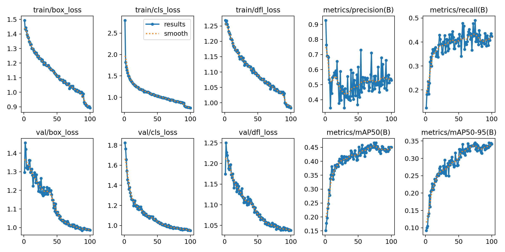
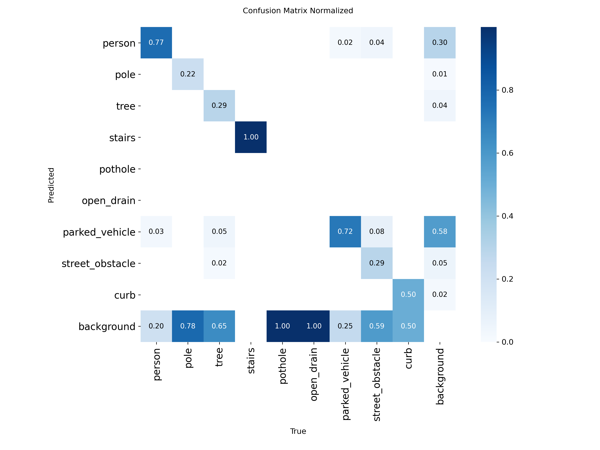
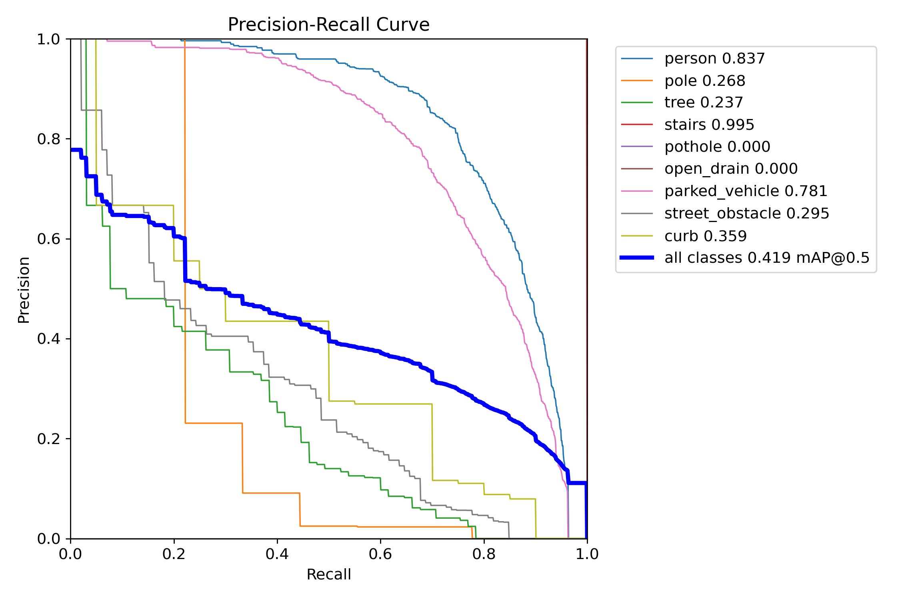
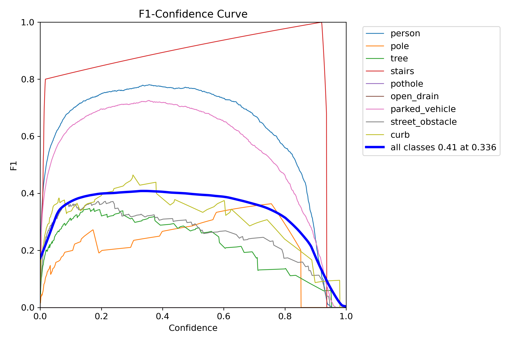
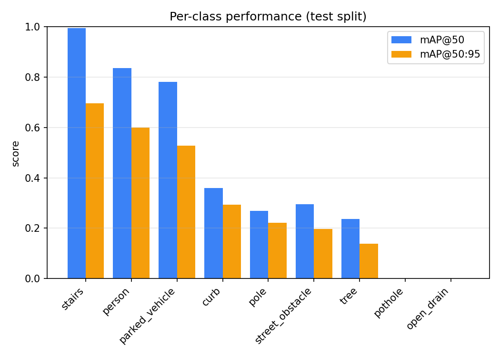
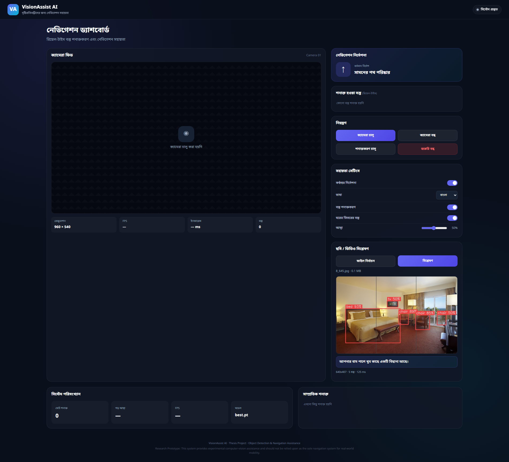
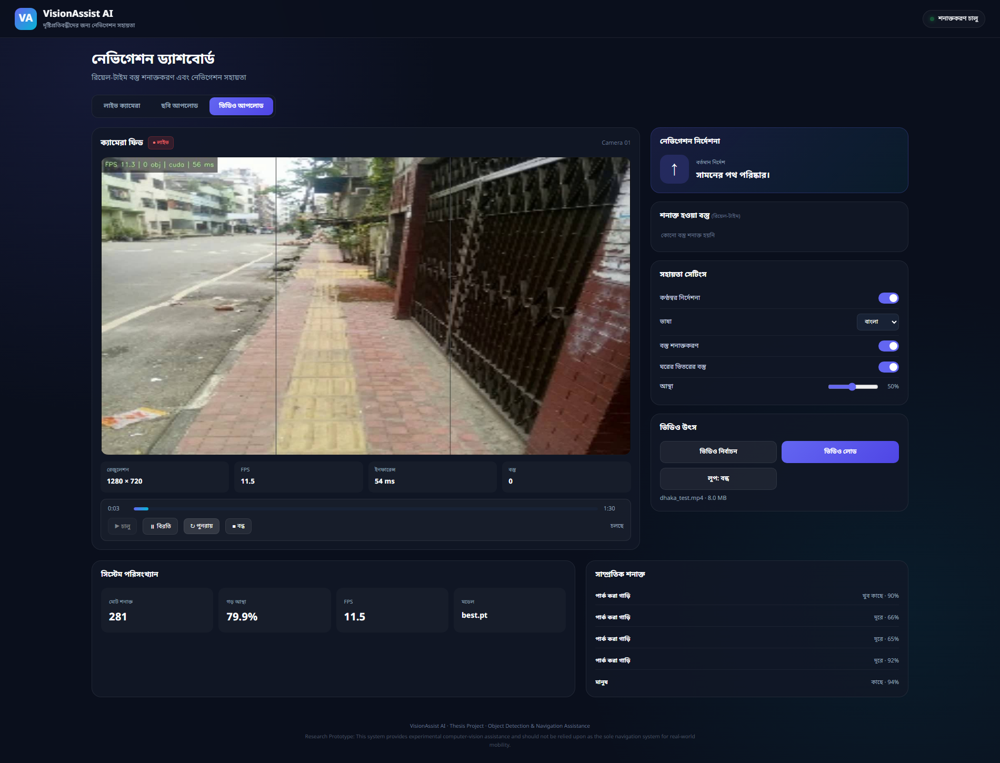
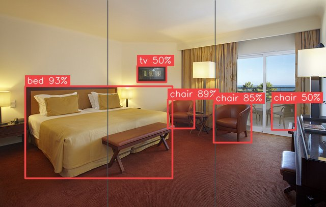

Object Detection and Navigation Assistance
for Visually Impaired Individuals
by
First Author Name — Student ID
Second Author Name — Student ID
Third Author Name — Student ID
Capstone Thesis (CSE 400) submitted in partial fulfillment of the
requirements for the degree of
Bachelor of Science in Computer Science and Engineering
Supervisor
Supervisor Name
Co-supervisor
Co-supervisor Name
GREEN
UNIVERSITYOF BANGLADESH
DEPARTMENT OF COMPUTER SCIENCE AND ENGINEERING
GREEN UNIVERSITY OF BANGLADESH
TERM AND YEAR
© Department of Computer Science and Engineering,
Green University of Bangladesh
All rights reserved.
| Title | Object Detection and Navigation Assistance for Visually Impaired Individuals |
| Author | First Author, Second Author & Third Author |
| Student ID | ID 1, ID 2 & ID 3 |
| Supervisor | Supervisor Name |
| Co-supervisor | Co-supervisor Name |
We declare that this thesis entitled Object Detection and Navigation Assistance for Visually Impaired Individuals is the result of our own work except as cited in the references. The thesis has not been accepted for any degree and is not concurrently submitted in candidature of any other degree.
Department of Computer Science and Engineering
Green University of Bangladesh
Date: Defense Date
This is to certify that the thesis entitled Object Detection and Navigation Assistance for Visually Impaired Individuals by First Author, Second Author & Third Author has been successfully defended and examined.
Based on the evaluation and discussion held on Defense Date, we, the undersigned, hereby endorse the thesis for acceptance and approval.
External Member’s Position
External Member’s Affiliation
Board Member’s Position
Department of Computer Science and Engineering
Green University of Bangladesh
Board Chair’s Position
Green University of Bangladesh
Date: Defense Date
Department of Computer Science and Engineering
Green University of Bangladesh
Purbachal American City, Kanchan, Rupganj, Narayanganj-1461, Dhaka, Bangladesh
This is to certify that the thesis entitled Object Detection and Navigation Assistance for Visually Impaired Individuals, submitted by First Author (Student ID: ID 1), Second Author (Student ID: ID 2) & Third Author (Student ID: ID 3), undergraduate students of the Department of Computer Science and Engineering, has been examined. Upon recommendation by the examination committee, we hereby accord our approval of it as the presented work and submitted report fulfill the requirements for its acceptance in partial fulfillment for the degree of Bachelor of Science in Computer Science and Engineering.
Department of Computer Science and Engineering
Green University of Bangladesh
Department of Computer Science and Engineering
Green University of Bangladesh
Department of Computer Science and Engineering
Green University of Bangladesh
Place: Purbachal American City, Kanchan, Rupganj, Narayanganj-1461, Dhaka, Bangladesh
Date: Defense Date
First and foremost, we are grateful to Green University of Bangladesh for the opportunities and the resources that made this work possible, and to the Department of Computer Science and Engineering for maintaining an environment in which a student project is allowed to be ambitious.
We thank the Chairman of the Department of Computer Science and Engineering for his continued support and for the departmental guidance that shaped our academic path.
Our thanks go to all the faculty members of the department. What we were taught over four years is visible in every part of this thesis, from the way the dataset was split to the way the results are reported.
We are especially grateful to our supervisor, Supervisor Name, and our co-supervisor, Co-supervisor Name. Their guidance shaped the direction of this work at several points where it could easily have gone wrong. In particular, the insistence that we report what the system actually does rather than what we hoped it would do is the reason Chapter 4 of this thesis reads the way it does.
We are always grateful to our parents. Their patience and quiet support carried us through the long stretches of this project when there was very little to show for the effort.
We also thank our teammates and classmates, whose questions, criticism and occasional refusal to accept a convenient answer improved the work considerably.
Finally, we thank everyone who supported us directly or indirectly in completing this research.
First Author, Second Author & Third Author
Department of Computer Science and Engineering
Green University of Bangladesh
Date: Submission Date
Dedicated to Almighty Allah —
All praise to Him for His endless mercy and guidance.
And to our parents, whose support made this study possible.
– First Author
To my ever-loving and supportive parents,
whose sacrifices and prayers have been my greatest strength.
– Second Author
To my respected teachers and mentors,
whose knowledge and encouragement shaped my academic journey.
– Third Author
Around the world a large number of people live with a visual impairment severe enough to make independent outdoor movement difficult, and in Bangladesh the difficulty is compounded by the state of the walking environment. A Dhaka footpath routinely contains an uncovered drain, a pole planted in the middle of the path, a parked rickshaw, or a stretch of broken pavement. A white cane finds some of these obstacles late and misses others entirely. This thesis develops and evaluates VisionAssist AI, a camera-based system that detects such obstacles in real time and describes them in spoken Bengali and English.
The central obstacle to building the system was not the detector but the data. No annotated dataset of Bangladeshi footpath hazards existed, and hand-annotating one is the step at which student projects of this kind commonly stall. A machine-assisted annotation pipeline was therefore constructed: an open-vocabulary detector, driven by thirty-five natural-language prompts, proposed candidate boxes on a domain-selected subset of an unannotated pool of 21,359 images, and those proposals were reviewed by a human before export. After perceptual-hash de-duplication the result was a dataset of 2,782 annotated Dhaka footpath images containing 23,962 bounding boxes across nine hazard classes, split 70/20/10 with duplicate clusters kept together so that no near-copy of a training image reaches the test set.
A YOLO11n detector was fine-tuned on this dataset for 100 epochs on a single laptop GPU. On a held-out test split of 276 images it reaches mAP@0.5 of 0.419 and mAP@0.5:0.95 of 0.297, with per-class AP@0.5 of 0.837 for person and 0.781 for parked_vehicle. A second, COCO-pretrained detector supplies twelve indoor furniture classes at runtime, fused with the thesis model by an intersection-over-union rule so that the trained model always wins a disputed box. Detections are converted into spoken guidance by a deterministic navigation layer that assigns a left/centre/right zone and a near/medium/far proximity band from box geometry, ranks obstacles by danger and position, and suppresses repetition. End-to-end throughput is 22.9 frames per second in live camera mode.
The results are reported without softening. Two classes are reliable, four are weak, and the three ground-surface hazards that motivated the project — pothole, open_drain and stairs — received so few annotations that the model does not detect the first two at all. The cause is traced precisely: the open-vocabulary annotator, which found more than 13,000 vehicles, found twenty-one potholes. The system also carries no depth sensor, so no claim of metric distance is made anywhere in this work. What the thesis contributes is a working prototype, a reproducible dataset pipeline, and a measured account of exactly where machine-assisted annotation helps and where it fails.
Keywords: object detection, YOLO, assistive technology, visual impairment, navigation assistance, Bengali text-to-speech, open-vocabulary annotation, Dhaka footpath dataset.
1Introduction13
1.1Background of the Study13
1.1.1State of the Art in the Modern Context13
1.1.2Importance and Relevance of the Topic14
1.2Research Problem and Its Context14
1.3Motivation15
1.4Applications and Practical Use Cases15
1.5Research Objectives16
1.6Research Methodology (Overview)16
1.7Research Contribution17
1.8Financial Planning and Timeline18
1.8.1Budget Estimation18
1.8.2Gantt Chart18
1.9Organization of the Dissertation19
2Literature Review20
2.1Introduction20
2.2Theoretical Background / Existing Models20
2.3Related Studies22
2.4Comparative Analysis of Existing Approaches23
2.5Summary of Research Gaps25
3Proposed Methodology27
3.1Introduction27
3.2Conceptual Framework27
3.3System Architecture28
3.3.1Algorithms and Model Explanation31
3.3.2Data Flow Diagram34
3.4Data Collection Process and Analysis35
3.4.1Data Collection Methods35
3.4.2Data Analysis Techniques38
3.5Engineering and Societal Considerations39
3.5.1Societal Impacts of Engineering Solutions40
3.5.2Environment and Sustainability Considerations40
3.5.3Ethical and Professional Responsibility41
4Results and Discussion42
4.1Introduction42
4.2Quantitative Results42
4.2.1Performance Metrics42
4.2.2Result Tables and Graphical Representations43
4.2.3Statistical Analysis47
4.3Qualitative Results48
4.3.1Visualization of Results48
4.3.2User Evaluation / Case Studies52
4.4Comparative Analysis52
4.4.1Benchmark Comparison52
4.4.2Correlation with Literature Review53
4.4.3Discussion of Improvements53
4.5Discussion of Findings54
5Conclusion56
5.1Summary of the Study56
5.2Key Findings and Contributions56
5.3Limitations57
5.4Future Works58
5.5Recommendations59
5.6Concluding Remarks60
References61
Annexure: WP and EA Mapping63
Annexure: SDG–Goal Mapping68
1.1Block diagram of the proposed system.17
1.2Planned project schedule.19
3.1Conceptual framework: from pixels to a spoken instruction.27
3.2System architecture, showing the four layers and the two detectors.29
3.3Zone and proximity geometry used for spatial reasoning.32
3.4Level-0 and Level-1 data flow diagrams.35
3.5Dataset preparation pipeline from raw pool to training split.36
4.1Training and validation curves over 100 epochs.43
4.2Normalised confusion matrix on the test split.45
4.3Precision–recall curves by class.46
4.4F1–confidence curves by class.46
4.5Per-class average precision against training instance count.47
4.6Live camera mode with annotated detections.48
4.7Uploaded-image analysis mode.49
4.8Recorded-video mode with playback controls.50
4.9Indoor detection through the second, COCO-pretrained model.51
1.1Budget estimation for the project.18
2.1Comparative analysis of existing approaches.24
2.2Research gaps mapped to thesis objectives.25
3.1The nine thesis classes and why each was included.30
3.2Priority weights used by the navigation engine.32
3.3Dataset reduction from the raw pool to the training set.36
3.4Annotation prompts and the number of boxes each recovered.37
3.5Training configuration.38
3.6Runtime configuration parameters.39
4.1Overall detection results on the test split.43
4.2Per-class performance on the test split.43
4.3Measured runtime performance by input mode.47
4.4Bengali guidance examples produced by the system.51
4.5English guidance examples produced by the system.51
4.6Research objectives against measured outcomes.54
5.1Complex Engineering Problems (WP) – application to this thesis.63
5.2Complex Engineering Activities (EA) – application to this thesis.65
5.3Mapping of all 17 SDG goals to achievements from this thesis.68
Helping a blind person move safely through a city is one of the oldest problems in assistive technology, and for most of its history the answer has been mechanical. The long white cane, which spread after the Second World War, works by touch: it finds the ground a step ahead and reports what it strikes. It is cheap, needs no power, never fails silently, and it is still the most widely used mobility aid in the world. Its limits are equally well understood. A cane finds obstacles at ground level and roughly one pace ahead. It does not find a signboard at head height, it does not warn about a drain until the tip is already inside it, and it says nothing about what kind of obstacle it has hit.
The first attempts to do better with electronics appeared in the 1960s as ultrasonic and laser travel aids that converted distance into a tone. They detected that something was present but could not say what it was, and users found the continuous audio tiring. Satellite navigation in the 1990s solved a different problem, route-level guidance, but a positioning system accurate to several metres cannot tell a walker that there is a pothole directly in front of them.
The change that made the present work possible came from computer vision. Convolutional networks trained on large labelled datasets moved object recognition from a research curiosity to something that works on ordinary photographs, and the detection architectures that followed made it fast enough to run on a video stream. The introduction of single-stage detection, in which localisation and classification are produced by one forward pass over the image rather than by a proposal stage followed by a classifier, was the specific milestone that mattered [2]. It made the accuracy-per-millisecond trade-off explicit and tunable, and that is exactly the trade-off an assistive device has to make.
Today a small detection model running on a laptop or a mid-range phone can identify dozens of object categories at video rate. The YOLO family has been through many iterations, from the original unified detector [2] through anchor-free and decoupled-head designs, and recent releases are distributed as engineering frameworks that offer the same architecture at several sizes [7]. This scaling property is what lets a project choose a nano-sized model for a 4 GB laptop GPU and still keep the same training recipe. Alongside it, two-stage detectors [3] remain more accurate at higher cost, and transformer-based detectors [12] have removed hand-designed post-processing at the price of longer training.
Three developments are especially relevant here. The first is the availability of large general-purpose detection datasets such as COCO [8], which give any project eighty categories of everyday objects for free. The second is open-vocabulary detection, in which a text encoder is aligned with a visual backbone so that the categories to be detected can be supplied as plain language at inference time rather than fixed at training time [16, 17]. The third is neural text-to-speech, which now produces Bengali speech of a quality that a user will actually tolerate for extended periods.
The current challenges are equally clear. General-purpose datasets do not contain the object categories that matter on a South Asian footpath; there is no COCO class for an uncovered drain. Monocular depth estimation has improved [18] but adds inference cost and returns relative rather than metric depth, which means a system without a dedicated depth sensor cannot honestly report distance in metres. And there is a persistent evaluation gap: many assistive prototypes report detection accuracy but not whether the resulting guidance was useful, because measuring the latter requires studies with visually impaired participants.
The relevance of this topic in Bangladesh is not abstract. Footpaths in Dhaka are shared with vendors, construction material, parked rickshaws and CNG autos, and drain covers go missing often enough that an open drain in a walkway is an ordinary hazard rather than an exceptional one. A pedestrian who cannot see has to negotiate all of this with a cane, and the consequence of a mistake ranges from a turned ankle to a fall into a drain.
A system that names the obstacle and its direction changes the nature of the information the user receives. Instead of a tactile signal that something is there, they get a short sentence that says what it is and which side it is on, early enough to change course rather than stop. Because the guidance is spoken in Bengali, it is usable by someone with no English, which matters for the population most likely to need it.
There is a second beneficiary, less obvious. The dataset and the annotation pipeline built for this work are reusable. Any subsequent project on Bangladeshi street scenes — pedestrian safety analysis, footpath condition surveys, municipal maintenance planning — starts from an annotated corpus and a documented method rather than from nothing. Given that the absence of such a corpus is what stalls most work in this area locally, that contribution may outlast the prototype itself.
The problem this thesis addresses can be stated in one sentence: a visually impaired pedestrian in Dhaka has no affordable tool that identifies footpath obstacles by category and direction in a language they speak.
Each part of that sentence rules out an existing solution. Cane and guide-dog mobility is affordable but gives no category information. Commercial wearable devices with cameras exist but are priced far beyond what is realistic for most users in Bangladesh. Free smartphone applications built on general-purpose detectors will name a chair or a car but have no concept of an open drain or a broken footpath, because those classes are absent from the datasets they were trained on. Systems that offload inference to a cloud service inherit a network dependency, and a warning that arrives after the step has been taken is not a warning.
Underneath the application problem sits a data problem, and it is the harder of the two. Training a detector for Bangladeshi footpath hazards requires an annotated dataset of Bangladeshi footpaths, and none exists publicly. Producing one by hand means drawing tens of thousands of boxes, which is why three earlier attempts at this project inside the same research group did not reach a trained model. Any honest statement of the research problem has to include this: the gap is not only that a system is missing, but that the data needed to build one is missing, and the method for producing that data cheaply is itself an open question.
The motivation for this work has three strands.
The first is social. Independent movement is closely tied to employment, education and dignity. A tool that reduces the risk of walking to a bus stop is not a small improvement in quality of life, and the population it would serve in Bangladesh is large and underserved.
The second is practical. Cameras are already in every phone and laptop. A system that runs on commodity hardware without a subscription, a cloud account or a special-purpose device is one that a student, a charity or a hospital can actually deploy. This shaped a specific engineering decision recorded in Section 3.3: the detector was kept small enough to run alongside a display on a 4 GB laptop GPU, because a model that needs a data-centre card is not a solution to this problem.
The third strand emerged during the work rather than before it. Having watched the annotation step defeat earlier attempts, we became interested in whether an open-vocabulary detector could shoulder most of that burden. Answering that question — and measuring precisely where the answer is no — turned out to be useful independently of the assistive application, and it is the part of this thesis we expect to be cited.
The most direct use is the one the system was designed for: a person with a visual impairment walks with a phone camera facing forward, and the system announces obstacles in Bengali as they appear. In its current form the phone acts as camera and speaker while inference runs on a nearby machine, which is a realistic configuration for supervised outdoor testing but not yet for unaccompanied daily use.
A second application is orientation and mobility training. Instructors work with newly blind clients on route learning, and a system that can be run over recorded footage of a specific route, listing what is present and where, gives both instructor and client a shared description of the environment to work from.
A third is footpath condition assessment. The same detector, run over dashcam or handheld video of a street, produces a per-frame inventory of poles, obstructions and parked vehicles blocking the walkway. Municipal authorities currently gather this kind of information by manual survey. The current model is not accurate enough on surface defects to be used this way, but the pipeline is the right shape for it, and this is discussed as future work in Section 5.4.
Finally, the annotation methodology has an academic application. Any group facing an unlabelled image pool and a fixed deadline can reuse the prompt-driven pre-annotation and human-verification procedure described in Section 3.4, together with the honest account in Chapter 4 of which class types it works for.
General objective. To design, implement and evaluate a real-time, camera-based object detection and navigation assistance system that identifies footpath obstacles relevant to Bangladeshi pedestrians and communicates them as spoken guidance in Bengali and English on commodity hardware.
Specific objectives.
The work follows an applied engineering methodology in four stages: dataset construction, model training, system design and empirical evaluation. Figure 1.1 shows the shape of the resulting system. A camera frame enters at the left; two detectors run on it; their outputs are merged and converted into a spatial description; a rule-based navigation engine decides what, if anything, should be said; and a speech engine says it. The detail of each stage is given in Chapter 3.
┌──────────────┐ ┌──────────────────────────┐ ┌──────────────────┐
│ INPUT │ │ DETECTION │ │ SPATIAL │
│ ───────── │ │ ───────────────────── │ │ ───────────── │
│ Live camera │───▶│ YOLO11n (9 classes, │───▶│ zone: L / C / R │
│ Image file │ │ thesis-trained)│ │ proximity from │
│ Video file │ │ YOLO11n (12 indoor, │ │ box area ratio │
│ │ │ COCO) │ │ │
└──────────────┘ │ fuse: IoU > 0.55 → │ └────────┬─────────┘
│ thesis wins │ │
└──────────────────────────┘ ▼
┌──────────────┐ ┌──────────────────────────┐ ┌──────────────────┐
│ OUTPUT │ │ VOICE │ │ NAVIGATION │
│ ───────── │ │ ───────────────────── │ │ ───────────── │
│ Annotated │◀───│ Bengali: neural TTS │◀───│ rank by danger, │
│ video feed │ │ English: system TTS │ │ zone, proximity │
│ Spoken │ │ cooldown 3.0 s / object │ │ select top 3 │
│ guidance │ │ min gap 1.2 s │ │ build sentence │
└──────────────┘ └──────────────────────────┘ └──────────────────┘
Dataset construction began from an unannotated pool of 21,359 images, from which the in-domain subset was isolated, de-duplicated by perceptual hashing and pre-annotated by an open-vocabulary detector before human review. Model training fine-tuned a nano-scale YOLO11 detector for 100 epochs. System design added the spatial, navigation and voice layers and a browser-based interface. Evaluation measured detection accuracy on a held-out split and runtime throughput in each of the three input modes.
This thesis makes four contributions.
A domain-specific annotated dataset. 2,782 Dhaka footpath images carrying 23,962 bounding boxes over nine hazard classes chosen for their navigational consequence, split so that near-duplicate images cannot straddle the train and test sets. To our knowledge no comparable public resource exists for this domain.
A documented machine-assisted annotation pipeline. A reproducible procedure that converts an unannotated pool into a trained-model-ready dataset using prompt-driven open-vocabulary pre-annotation followed by human verification, including the selection rule, the de-duplication threshold and the prompt set.
A measured account of where that pipeline fails. This is a contribution rather than a caveat. The open-vocabulary annotator recovered more than 13,000 parked vehicles and 8,800 people, but only twenty-one potholes, twenty-two open drains and twenty-three sets of stairs. The finding that open-vocabulary transfer is strong for objects with a consistent visual prototype and near-useless for hazards defined by the absence of intact surface is, we believe, generally useful and is reported with the numbers that support it.
A working bilingual prototype. An integrated system with live camera, image and video modes, a deterministic navigation policy that suppresses repetition, and grammatically correct Bengali output including animacy-dependent numeral classifiers, running at 22.9 frames per second end to end on a consumer laptop.
No significant expenditure was required. All software used is open source and free, the image pool was obtained at no cost, and development and training ran on a personal laptop that the team already owned. Table 1.1 records what was used so that another group can judge whether they can reproduce the work.
Table 1.1: Budget estimation for the project.
| Item | Description | Cost | Note |
|---|---|---|---|
| Development machine | Laptop with NVIDIA RTX 3050 Ti (4 GB VRAM) | Already owned | Also used for training |
| Software | Python, PyTorch, Ultralytics, OpenCV, FastAPI | Free / open source | No licence fees |
| Text-to-speech | Neural Bengali voice service; system speech engine for English | Free | No API key required |
| Dataset | Image pool of 21,359 images | No cost | Annotation done by the team |
| Compute for training | 3.72 hours of GPU time, local | Electricity only | No cloud instance rented |
| Camera hardware | Laptop webcam and a mobile phone camera over the local network | Already owned | No dedicated sensor purchased |
Figure 1.2 shows the schedule the project followed, in weeks rather than calendar dates so that it can be adapted to a different term. Two features of it are worth noting because they reflect what actually happened rather than what was planned. Dataset preparation occupies the widest band, which is accurate: it consumed more calendar time than model training and system implementation combined. And evaluation overlaps implementation rather than following it, because measuring the system while it was still being built is what surfaced the per-class failures early enough to report them properly.
| Stage of research | W1 | W2 | W3 | W4 | W5 | W6 | W7 | W8 | W9 | W10 | W11 | W12 |
|---|---|---|---|---|---|---|---|---|---|---|---|---|
| Topic selection and scoping | ||||||||||||
| Literature review | ||||||||||||
| Image pool inspection and domain selection | ||||||||||||
| De-duplication and annotation pipeline | ||||||||||||
| Human verification of annotations | ||||||||||||
| Model training and validation | ||||||||||||
| Navigation and voice engine | ||||||||||||
| Interface and input modes | ||||||||||||
| Evaluation and result analysis | ||||||||||||
| Thesis writing and revision |
The remaining chapters are organised as follows.
Chapter 2, Literature Review, sets out the theoretical background of object detection, reviews work on assistive navigation, open-vocabulary detection and speech output, compares the main families of approach against criteria relevant to this problem, and states the gaps this thesis addresses.
Chapter 3, Proposed Methodology, presents the conceptual framework and system architecture, gives the detection and navigation algorithms with their equations, describes the dataset collection, annotation and analysis procedures, and discusses the societal, environmental and ethical dimensions of the design.
Chapter 4, Results and Discussion, reports the quantitative detection and runtime results, shows qualitative output from all three input modes, compares the system against baselines and against the literature, and discusses what the findings mean.
Chapter 5, Conclusion, summarises the study, states the contributions and limitations, proposes future work and gives recommendations.
Two annexures follow the references. The first maps the complex engineering problem and activity attributes to this project; the second maps all seventeen Sustainable Development Goals to what the work achieved.
This review covers three bodies of work that meet in the system described by this thesis: assistive technology for visually impaired mobility, deep learning object detection, and the speech and spatial-language layer that turns detections into instructions. The emphasis falls on the last fifteen years, since the deep learning methods that make the system feasible date from 2012 onward, with earlier work included where it establishes why a particular approach was abandoned.
The review has three aims. First, to establish the technical foundations on which the methodology of Chapter 3 rests, so that each design decision can be traced to a reason rather than a preference. Second, to survey what camera-based assistive systems have achieved and where they have consistently fallen short. Third, to identify gaps precise enough to be turned into the research objectives of Section 1.5.
Sources were located through IEEE Xplore, Google Scholar and the ACM Digital Library, using combinations of the terms object detection, assistive navigation, visually impaired, obstacle detection, open-vocabulary detection and YOLO. Priority was given to peer-reviewed conference and journal papers; software frameworks are cited where the framework, rather than a paper, is the artefact actually used. Works were included when they either establish a method the thesis uses or describe a system in the same application area, and excluded when they address indoor robotics without a human-guidance component.
The chapter is organised as follows. Section 2.2 presents the theoretical background and the detection architectures. Section 2.3 reviews related studies in assistive navigation, annotation and speech output. Section 2.4 compares the main approach families against criteria that matter for this problem. Section 2.5 states the resulting gaps.
Object detection asks a model to do two things at once: say where objects are, and say what they are. Formally, given an image I, a detector produces a set of tuples (b, c, s) where b is a bounding box, c a class label and s a confidence score. Both the number of objects and their positions are unknown in advance, which is what makes the problem harder than classification and why the output cannot be a fixed-length vector.
Before deep learning, detectors combined hand-designed features with a sliding-window classifier. The Viola–Jones framework [10] is the canonical example: Haar-like features, an integral image for fast evaluation, and a cascade of boosted classifiers that reject most windows cheaply. It was fast enough for real-time face detection in 2001, and its limitation is instructive. The features were designed for the appearance of a face and did not generalise to other categories. Every new object class needed a new feature design.
The move to learned features followed the success of deep convolutional networks on large-scale image classification [11], which showed that a network trained on enough labelled data learns a feature hierarchy better than a hand-designed one. Detection architectures then split into two families.
Two-stage detectors first propose regions likely to contain an object and then classify and refine each proposal. Faster R-CNN [3] made this practical by learning the proposal step itself with a region proposal network sharing convolutional features with the classifier, so that proposal generation costs almost nothing extra. The family remains among the most accurate, particularly for small objects, because the second stage sees a cropped and re-pooled feature map at higher effective resolution.
The cost is latency. Two passes over shared features, plus per-proposal computation that grows with the number of proposals, gives a frame time that is difficult to bring under the budget an interactive application needs on modest hardware. That is the reason this family was not chosen here, and the reasoning is recorded again in Section 3.3 where the decision is made.
Single-stage detectors predict boxes and classes directly from feature maps in one pass. YOLO [2] framed detection as a single regression over a grid, trading some localisation accuracy for a large speed gain, and established the accuracy–latency trade-off as an explicit design axis. SSD [4] added predictions at several feature-map scales, improving performance on objects of varying size. RetinaNet [5] identified why single-stage accuracy had lagged — the enormous imbalance between background and foreground anchors during training — and introduced focal loss to down-weight easy negatives.
Subsequent YOLO versions [13, 14, 6] accumulated improvements in backbone design, multi-scale feature fusion and training procedure. More recent releases, distributed as engineering frameworks rather than papers [7], adopted anchor-free prediction and a decoupled detection head, and are published at several sizes from nano to extra-large sharing one architecture and training recipe. That scaling property is the single most relevant property of this family for the present work: it allows the operating point to be chosen for the available hardware without changing anything else.
Transformer-based detectors [12] form a third line, replacing hand-designed anchor matching and non-maximum suppression with set prediction and bipartite matching. They are elegant and competitive but converge slowly during training, which makes them a poor fit for a small dataset and a limited compute budget.
A conventional detector can only produce the classes it was trained on. Open-vocabulary detection removes that restriction by aligning a visual backbone with a text encoder in a shared embedding space, so that a class can be specified at inference time as a phrase. The alignment idea comes from contrastive image–text pre-training [17], which learns a joint space from large numbers of image and caption pairs. YOLO-World [16] applies this within a real-time detection architecture, giving a model that accepts arbitrary text prompts and still runs quickly.
For this thesis the relevance is not deployment but annotation. If a model can detect an “uncovered drain” from a text prompt, it can pre-annotate a dataset for a class it was never trained on, leaving a human to verify rather than to draw. Whether that promise holds for the classes this project needs is an empirical question, and Chapter 4 answers it — partly yes and, for the classes that matter most, no.
Knowing that an obstacle exists is less useful than knowing how far away it is. Stereo cameras and time-of-flight sensors measure depth directly but add hardware. Monocular depth networks [18] estimate depth from a single image and have improved substantially, but they return depth that is accurate up to an unknown scale unless calibrated, and they cost inference time the system does not have to spare.
Without either, apparent size is the only available cue: an object occupying a large fraction of the frame is generally nearer than one occupying a small fraction. This supports ordinal statements (“close”, “further away”) but not metric ones. The consequence is a rule adopted throughout this thesis and stated here so that it is not mistaken for an oversight: the system never claims a distance in metres, because it has no means of measuring one.
Camera-based mobility aids have been surveyed periodically as the underlying vision methods changed [9]. Across the literature the common structure is stable: a camera, a detection or recognition stage, and a non-visual output channel, usually audio or haptic. Where designs differ is in the placement of computation and in how much is communicated.
Systems that send frames to a server obtain higher accuracy by using larger models, at the price of network dependence and variable latency. Both are serious for an application in which a warning must arrive before the user's next step, and neither is acceptable if the user is walking through an area with poor coverage. Systems that run on the device accept a smaller model and lower accuracy in exchange for predictable timing. This thesis takes an intermediate position that is stated plainly in Section 3.3: the model runs on a local machine on the same network as the camera, avoiding the public internet but not yet running on the phone itself.
A recurring finding, reported by several authors and consistent with basic ergonomics, is that saying less is better. A detector running at over twenty frames per second can generate hundreds of detections a minute, and narrating them produces speech a walking user cannot follow. Reducing output is therefore as much a design problem as improving detection, and this observation directly motivated the announcement policy of Section 3.3.1.
Progress in detection has been tied to the availability of annotated data. PASCAL VOC [15] established the evaluation protocol still in use, including the average-precision metric and the intersection-over-union matching criterion. COCO [8] expanded scale and difficulty with eighty categories in complex scenes and introduced the averaged mAP@0.5:0.95 metric used in Chapter 4 of this thesis.
Neither contains the categories this project needs. COCO has car, person and chair but no class for an open drain, a pothole or a footpath kerb. A project targeting these must build its own dataset, and the cost of doing so by hand is the bottleneck. This is why the annotation method is treated in this thesis as a research question in its own right rather than as a preliminary chore, and why Section 3.4 reports the procedure at a level of detail that allows it to be repeated.
Converting a detection into a sentence involves three decisions: what to mention, in what order, and in what words. The first two are covered above. The third is language-specific and is often treated as an afterthought in systems built for English.
Bengali requires more care. Word order is subject–object–verb rather than subject–verb–object, so an English sentence template translated word by word produces something a native speaker recognises as wrong. Bengali also uses numeral classifiers that depend on the animacy of the noun: একজন for a person, একটি for an object. A system that says একটি মানুষ is understandable but reads as a machine. Because the intended users are Bangladeshi and the guidance is the entire output of the system, getting this right was treated as a functional requirement rather than a polish item, and Section 3.3.1 describes the template design that enforces it.
On the synthesis side, neural text-to-speech has made Bengali output substantially more natural than concatenative or formant synthesis. The practical constraint encountered in this project is availability: the development machine's operating system speech engine ships with no Bengali voice at all, so Bengali synthesis has to be obtained from a network service while English can be produced offline. That asymmetry is a real limitation and is recorded as such in Section 5.3.
Table 2.1 compares the main families of approach against the criteria that actually constrain this problem: whether the approach names obstacle categories, whether those categories cover South Asian footpath hazards, what hardware it needs, whether it depends on a network, whether it can state distance, and what it costs the user.
Table 2.1: Comparative analysis of existing approaches against criteria relevant to this thesis. Rows describe families of approach rather than individual publications.
| Approach | Names the obstacle? | Covers local hazards? | Hardware | Network needed? | States distance? | Cost to user |
|---|---|---|---|---|---|---|
| White cane | No — contact only | Only what it touches, one pace ahead | None | No | By contact | Very low |
| Ultrasonic travel aid | No — distance tone only | Detects presence, not type | Dedicated sensor | No | Yes, by sensor | Low to moderate |
| GPS route guidance | No | Not at all — route scale only | Phone | Usually | Route level | Low |
| COCO-based phone app [8] | Yes, 80 generic classes | No — no drain, pothole or kerb class | Phone | Varies | No | Low |
| Depth-sensor wearable [18] | Sometimes | Detects obstruction, rarely names it | Depth camera | No | Yes | High |
| Cloud-offloaded detector | Yes, large model | Only if trained for them | Phone plus server | Yes — critical | No | Recurring fee |
| This work | Yes, 9 trained + 12 indoor | Yes by design; see Chapter 4 for how well | Commodity laptop GPU | Local network only | No — ordinal bands only | None beyond hardware owned |
Category coverage. This is the criterion on which existing solutions fail most clearly for the target setting. A general-purpose detector trained on COCO will confidently identify a car parked on a footpath, which is useful, and will say nothing whatever about the uncovered drain beside it, which is the thing most likely to cause injury. No amount of accuracy on the wrong class list solves this.
Latency and dependence. Cloud offloading buys accuracy with a dependency that fails exactly when it is least convenient. For a warning system the relevant measure is not average latency but worst-case latency, and a network round trip has a much worse tail than local inference.
Distance. Only the sensor-based approaches can honestly report metric distance. Camera-only systems, including this one, are limited to ordinal statements unless they add a depth model, and Section 2.2.5 explains why that was not adopted here.
Cost. Devices with dedicated depth sensors are the most capable and the least accessible. Given that affordability is part of the problem statement in Section 1.2, an approach whose hardware cost exceeds a year's income for the intended user is not a candidate however well it performs.
Suitability. Taken together, the criteria point to a locally run, camera-only, single-stage detector trained on a purpose-built class list, with ordinal rather than metric spatial description. That is the configuration adopted in Chapter 3, and the comparison above is the reason for it.
Four gaps follow from the review. They are stated narrowly, because the broader claim that no assistive navigation system exists would not be accurate.
Gap 1 — Class coverage does not match the environment. Detection research in this application area relies overwhelmingly on general-purpose category sets. Those sets omit the hazards that dominate a Bangladeshi footpath: open drains, potholes, broken pavement, kerb edges and vendor obstructions. A system built on them is accurate about the wrong things.
Gap 2 — No public annotated dataset for this domain. Gap 1 persists because closing it requires data that does not exist. Building it by hand is expensive enough that projects routinely stop at this point, which suppresses work in the area in a self-reinforcing way.
Gap 3 — The cost of annotation is discussed but rarely measured. Open-vocabulary detection is presented in the literature as a capability, and its use as an annotation accelerator is plausible but under-reported. In particular there is little published evidence about which kinds of class it transfers to and which it does not, which is precisely what a project deciding whether to rely on it needs to know.
Gap 4 — Output language is treated as secondary. Systems are typically evaluated on detection metrics, with the sentence generation left as a template exercise. For a non-English-speaking user the sentence is the entire interface, and grammatical correctness in the target language is a functional requirement rather than a refinement.
Table 2.2: Research gaps mapped to the objectives of Section 1.5.
| Gap | Why it matters | Objective it produces |
|---|---|---|
| 1. Class coverage | Detection accuracy on categories the user does not need to avoid provides no safety benefit. | Objective 1: define and annotate a nine-class list chosen for navigational consequence. |
| 2. No domain dataset | Without data the class list cannot be trained, and the gap cannot be closed by anyone. | Objectives 1 and 2: build the dataset, then train and evaluate on it. |
| 3. Unmeasured annotation cost | Groups adopt or reject machine-assisted annotation on guesswork rather than evidence. | Objective 1: document the pipeline and report per-class yield honestly. |
| 4. Output language secondary | An ungrammatical instruction in the user's own language reduces trust in the whole system. | Objective 3: design Bengali generation with correct word order and classifier agreement. |
Of these, Gap 2 is the one this thesis addresses most directly, because it blocks all the others. The dataset described in Section 3.4 exists so that Gap 1 can be closed; the annotation pipeline exists because Gap 2 could not otherwise be closed within a two-semester project; and the measurement reported in Chapter 4 of where that pipeline fails is the contribution to Gap 3. Chapter 3 begins from these gaps and builds the system that responds to them.
Building on the gaps identified in the literature review, this chapter develops the conceptual and system framework underlying the study. Chapter 2 established four things that constrain the design: the class list must be built for the environment rather than borrowed, the dataset must be built because none exists, the model must be small enough for commodity hardware, and the spoken output must be grammatically correct Bengali. Everything in this chapter follows from those four constraints.
The chapter moves from the abstract to the concrete. Section 3.2 gives the conceptual framework: the chain of transformations that takes a camera frame to a spoken sentence. Section 3.3 turns that chain into a layered software architecture and states the algorithms, equations and parameters that implement it. Section 3.4 describes how the dataset was collected, annotated and analysed. Section 3.5 examines the societal, environmental and ethical dimensions of the resulting design.
The conceptual framework of this study is a transformation pipeline. It is not a hypothesis network, because the study does not test a hypothesis about a population; it is a process model that states what information exists at each stage and what operation produces the next stage. Figure 3.1 presents it.
RAW SIGNAL SEMANTIC SPATIAL PRAGMATIC LINGUISTIC
────────── ──────── ─────── ───────── ──────────
┌──────────┐ ┌──────────┐ ┌──────────┐ ┌──────────┐ ┌──────────┐
│ Frame │ │ What │ │ Where │ │ What is │ │ How to │
│ (pixels)│─────▶│ is it? │────────▶│ is it? │────────▶│ worth │───────▶│ say it │
│ │ │ │ │ │ │ saying? │ │ │
└──────────┘ └──────────┘ └──────────┘ └──────────┘ └──────────┘
│ │ │ │ │
1280×720 class label zone L/C/R priority score Bengali / English
BGR array + box + conf proximity band cooldown filter sentence
N/M/F top-3 selection + audio
▲ learned ▲ learned ▲ deterministic ▲ deterministic ▲ deterministic
(camera) (two YOLO models) (Eq. 3.1–3.3) (Eq. 3.4) (templates + TTS)
1. Raw signal. A frame arrives from one of three sources — a live camera, an uploaded image, or a decoded video file — as a pixel array. At this stage the system knows nothing.
2. Semantic. Detection assigns a class label, a bounding box and a confidence to each object found. This is the only stage that contains a trained model. Two detectors run: the thesis model, which knows the nine footpath classes, and a COCO-pretrained model restricted to twelve indoor furniture classes.
3. Spatial. Each detection is converted from pixel coordinates into a description a person can act on: which third of the field of view it occupies, and how near it appears. This stage is deliberately rule-based, and the rules are given as Equations (3.1) to (3.3).
4. Pragmatic. Not everything detected should be said. This stage ranks detections by how much they matter, keeps at most three, and suppresses anything recently announced.
5. Linguistic. The surviving detections are assembled into one sentence in the selected language and passed to a speech engine.
Two properties of this framework are deliberate design commitments rather than incidental features. The first is that only one stage learns. A navigation policy could be learned end to end from data, but such a model would need training data that does not exist, would fail in ways that are hard to enumerate in advance, and could not be explained line by line in a viva. For a system whose failure mode is a person walking into a drain, a policy that can be read and audited is worth more than one that is marginally better on average. The second is that information is only ever discarded, never invented. Nothing downstream adds knowledge the detector did not supply. This is why the system never states a distance in metres: no stage in the chain has access to depth, so no stage may claim it.
These commitments determine the software architecture presented next: four layers with a strict one-directional flow, each layer able to reduce or reformat what it receives but never to add to it.
The system uses a layered, pipeline architecture with a thin client. Layers communicate in one direction only, and each is independently testable. The choice of a thin browser client over a native application was made so that a phone can act as camera and speaker without any installation, while the model stays on a machine capable of running it. Figure 3.2 shows the arrangement.
┌───────────────────────────────── PRESENTATION LAYER (browser) ─────────────────────────────────┐
│ mode selector · annotated video · overlay canvas · guidance panel · object list · statistics │
│ camera capture (getUserMedia) · audio playback queue · language and voice controls │
└───────────────────────────────────────────┬────────────────────────────────────────────────────┘
HTTP · MJPEG stream · JSON state poll
┌───────────────────────────────────────────┴──── SERVICE LAYER (FastAPI) ───────────────────────┐
│ /video_feed /api/state /api/detect_frame /api/analyze_image /api/analyze_video │
│ request validation · frame size limits · audio clip queue · error mapping │
└───────────────────────────────────────────┬────────────────────────────────────────────────────┘
┌───────────────────────────────────────────┴──── PROCESSING LAYER ──────────────────────────────┐
│ │
│ ┌─────────────┐ ┌────────────────────────────┐ ┌─────────────┐ ┌──────────────────┐ │
│ │ Capture │──▶│ Detector │──▶│ Spatial │──▶│ Navigation │ │
│ │ thread │ │ ┌──────────────────────┐ │ │ analyser │ │ engine │ │
│ │ │ │ │ best.pt 9 classes │ │ │ │ │ │ │
│ │ camera / │ │ │ 2,591,595 params │ │ │ Eq. 3.1 │ │ Eq. 3.4 │ │
│ │ file / │ │ └──────────────────────┘ │ │ Eq. 3.2 │ │ cooldown 3.0 s │ │
│ │ upload │ │ ┌──────────────────────┐ │ │ Eq. 3.3 │ │ min gap 1.2 s │ │
│ │ │ │ │ yolo11n.pt 12 indoor│ │ │ │ │ top-3 select │ │
│ └─────────────┘ │ └──────────────────────┘ │ └─────────────┘ └────────┬─────────┘ │
│ │ fuse: IoU > 0.55 → │ │ │
│ │ thesis model wins │ ┌────────┴─────────┐ │
│ └────────────────────────────┘ │ Voice engine │ │
│ │ bn: neural TTS │ │
│ │ en: system TTS │ │
│ └──────────────────┘ │
└────────────────────────────────────────────────────────────────────────────────────────────────┘
┌──────────────────────────────── RESOURCE LAYER ────────────────────────────────────────────────┐
│ best.pt (5.5 MB) yolo11n.pt data.yaml (class names, Bengali labels) config audio cache│
└────────────────────────────────────────────────────────────────────────────────────────────────┘
Presentation layer. A browser page that renders the annotated stream, overlays boxes, shows the current guidance sentence and the list of detected objects, and plays the generated audio. On a phone it also captures the camera through the browser and posts frames to the server, which means the phone needs no application installed.
Service layer. A small set of HTTP endpoints. Live mode streams annotated frames as MJPEG while the client polls a JSON state endpoint for guidance and statistics; the mobile path instead posts a single JPEG frame and receives detections, guidance and audio references in one response.
Processing layer. Capture, detection, spatial analysis, navigation and speech run as separate components on three threads, so that speech synthesis never blocks detection and detection never blocks the HTTP layer.
Resource layer. Model weights, the class definition file including Bengali labels, runtime configuration and cached audio.
Before the detection components are described, the nine classes they were trained to find must be stated, because every downstream decision refers to them. The list was fixed before annotation began and never reordered, since the class index is baked into every label file and reordering would silently relabel the entire dataset. The rule that produced the list is simple: every class must map to an action the navigation layer can express in a sentence. A footpath contains hundreds of nameable things, and a blind pedestrian needs only the ones that change where the next step goes.
Table 3.1: The nine thesis classes. Each was chosen because it maps to an obstacle a pedestrian must act on, and each carries a Bengali label used directly in the spoken output.
| ID | Class | Bengali label | What it covers | Why it is in the list |
|---|---|---|---|---|
| 0 | person | মানুষ | Pedestrians, standing or walking | Collision risk, and the dominant obstacle in a Dhaka crowd. |
| 1 | pole | খুঁটি | Electric, utility and sign poles; guy-wire anchor posts planted mid-path | The most common fixed obstruction in the middle of a Dhaka footpath. |
| 2 | tree | গাছ | Trunks growing through the walkway | Head and body collision; a cane sweeping low can miss a trunk at chest height. |
| 3 | stairs | সিঁड़ি | Steps up or down, kerb ramps, shop entrance steps | Fall risk, and needs a distinct warning because the correct response is to stop rather than step around. |
| 4 | pothole | গর্ত | Broken or missing pavement, sunken slabs, rubble craters | Trip and ankle injury, and invisible to a cane until contact. |
| 5 | open_drain | খোলা ড্রেন | Uncovered drains, missing or displaced manhole covers | The most dangerous class in the set. A fall into an open drain is a serious injury, and missing covers are routine in Dhaka rather than exceptional. |
| 6 | parked_vehicle | পার্ক করা গাड़ি | Rickshaw, CNG auto, motorcycle, car or van parked on or across the footpath | Blocks the walkway entirely and forces a step into traffic. |
| 7 | street_obstacle | রাস্তার প্রতিবন্ধকতা | Vendor stalls, construction material, bricks, sand piles, bins, hanging signboards | Forces a detour. Deliberately one broad class, because the required action is identical for all of them and splitting it would add annotation cost without changing any instruction. |
| 8 | curb | ফুটপাথের কিনারা | The footpath edge where it drops to the road | The boundary between safe surface and live traffic, arguably the single most important line to stay on the correct side of. |
The primary detector is a YOLO11 nano model fine-tuned on the thesis dataset. It contains 2,591,595 parameters and occupies 5.5 MB on disk. Three reasons determined this choice, in order of weight.
Single-stage architecture. Boxes and classes come out of one forward pass. Section 2.2.2 explained why a two-stage detector cannot meet the frame budget on this hardware; this is that reasoning applied.
Nano scale. The available GPU has 4 GB of memory shared with the display, and a second detector must fit alongside the first. A larger variant would improve accuracy and would not fit. This is a hardware constraint honestly reported, not a claim that nano is optimal.
Measured latency. At 640 px input the model completes a forward pass in 19.0 ms, which leaves room for the second detector, overlay drawing and JPEG encoding inside a real-time budget.
The secondary detector is the same architecture with COCO-pretrained weights, restricted to twelve indoor furniture classes: chair, couch, bed, dining table, bench, potted plant, tv, refrigerator, oven, microwave, sink and toilet. It exists because the thesis dataset is outdoor footpath imagery and contains almost no indoor scenes, so indoor classes could not honestly be trained from it. Rather than claim a capability the data cannot support, indoor coverage is borrowed and labelled as borrowed. These twelve classes carry no thesis-measured accuracy figure and are reported as a deployment feature, not a research result. Door is deliberately unsupported: it is absent from the COCO category list and was not annotated in the thesis dataset, so supporting it would mean inventing a capability that was never measured.
Because both models can detect person, running them naively would list and announce the same pedestrian twice. Two rules prevent this. The secondary model's output is filtered to the twelve classes above, excluding everything the thesis model covers; and where a remaining box overlaps a thesis-model box by more than 0.55 intersection over union, the secondary box is dropped. The threshold is deliberately generous, because the cost of dropping a duplicate is nothing and the cost of a double announcement is a confused user.
This section states the four algorithms that define the system's behaviour. All of them are short by design; every branch can be traced by hand.
Detection and fusion. Algorithm 3.1 produces the merged detection list for one frame.
Algorithm 3.1 Dual-model detection with fusion
────────────────────────────────────────────────────────────────────────────
Input : frame F, confidence threshold t = 0.50, indoor threshold t_i = 0.40
Output: merged detection list D
1 P ← thesis_model(F, conf = t, iou = 0.45, max_det = 30)
2 D ← P
3 if indoor_enabled then
4 S ← coco_model(F, conf = t_i)
5 S ← { d ∈ S : class(d) ∈ INDOOR_CLASSES } // 12 classes only
6 for each d ∈ S do
7 if max { IoU(d, p) : p ∈ P } ≤ 0.55 then
8 class_id(d) ← class_id(d) + 100 // keep ID spaces apart
9 D ← D ∪ { d }
10 return D
────────────────────────────────────────────────────────────────────────────
Line 5 is the rule that stops double counting; line 7 is the tie-break that lets the thesis model win a disputed box. The offset on line 8 keeps the two class-ID spaces from colliding, so that any later stage can always tell which model produced a given detection.
Spatial reasoning. Horizontal position is decided by the box centre. For a box with corners (x1, y1) and (x2, y2) in an image of width W, the normalised centre is
(3.1) cx = ( x1 + x2 ) / ( 2W )
and the zone is
(3.2) zone = LEFT if cx < 0.33 · RIGHT if cx > 0.66 · CENTER otherwise
The thresholds divide the field of view into equal thirds. Equal thirds are used rather than a narrower centre band because the centre zone triggers the highest priority weight, and a wide centre errs toward warning rather than silence.
Proximity is estimated from the fraction of the frame the box occupies. With frame area A = W × H:
(3.3) r = ( x2 − x1 )( y2 − y1 ) / A, proximity = NEAR if r ≥ 0.15 · MEDIUM if r ≥ 0.04 · FAR otherwise
LEFT CENTER RIGHT
┌───────────┬────────────────────┬───────────┐ c_x < 0.33 → LEFT
│ │ │ │ 0.33 ≤ c_x ≤ 0.66 → CENTER
│ │ ┌──────────┐ │ │ c_x > 0.66 → RIGHT
│ │ │ │ │ ┌────┐ │
│ │ │ r ≥0.15 │ │ │r< │ │ box area ÷ frame area = r
│ │ │ NEAR │ │ │0.04│ │
│ │ │ │ │ │FAR │ │ r ≥ 0.15 → NEAR
│ │ └──────────┘ │ └────┘ │ r ≥ 0.04 → MEDIUM
│ │ │ │ otherwise → FAR
└───────────┴────────────────────┴───────────┘
0.00 0.33 0.66 1.00 (normalised c_x)
Equation (3.3) is an apparent-size heuristic, not a measurement. A bus fifteen metres away and a signboard two metres away can produce the same area ratio. The system therefore never converts r into metres, and the words used in the spoken output — খুব কাছে (very close), সামনে (ahead) — are deliberately ordinal. Any figure in metres appearing in a description of this system would be fabricated.
Priority scoring. With over twenty detections possible per frame and at most three that can be spoken, ranking is necessary. Each detection receives a score:
(3.4) score(d) = wclass + wzone + wprox + 10 · conf(d)
Table 3.2: Priority weights used by the navigation engine.
| Term | Weight | Applies to | Reasoning |
|---|---|---|---|
| wclass | +100 | pothole, open_drain, stairs, curb, pole, and vehicle classes | Fall or collision hazards. An error here injures. |
| +40 | The twelve indoor furniture classes | Worth announcing, but walking into a chair is not walking into a drain. | |
| 0 | person, tree, street_obstacle, parked_vehicle | Ranked on geometry alone. A person is usually avoidable and often moves. | |
| wzone | +50 / 0 | CENTER / LEFT or RIGHT | Directly in the path outranks off to one side. |
| wprox | +30 / +12 / 0 | NEAR / MEDIUM / FAR | Sooner matters more than later. |
| Confidence | ×10 | All detections | Deliberately the smallest term, so certainty can never outrank being in the way. |
The weights are chosen so that the ordering they produce is explainable, not tuned to optimise a metric. A confident detection of a distant chair scores 50; a less confident detection of a pothole directly ahead and close scores over 180. That ordering is the intended behaviour, and it can be verified by arithmetic rather than by trusting a learned policy.
A further thirty-one COCO classes are permanently ignored and never announced — food, sports equipment, and small handheld items such as book and cell phone. They are real detections but nothing a pedestrian navigates around, and narrating them would bury the warnings that matter.
Announcement policy. Algorithm 3.2 decides what is said.
Algorithm 3.2 Guidance generation with repetition suppression
────────────────────────────────────────────────────────────────────────────
Input : detection list D, language L, current time t
Output: sentence s or nothing
1 R ← { d ∈ D : proximity(d) ≠ FAR } // announce_far = false
2 if R = ∅ then return nothing
3 sort R by score(d) descending // Eq. 3.4
4 R ← first 3 elements of R
5 N ← ∅
6 for each d ∈ R do
7 k ← (class(d), zone(d)) // the announcement key
8 if t − last_said[k] ≥ 3.0 then N ← N ∪ { d }
9 if N = ∅ then return nothing
10 if t − last_utterance < 1.2 then return nothing // global spacing
11 s ← build_sentence(N, L) // ONE sentence, ≤ 3 objects
12 for each d ∈ N do last_said[(class(d), zone(d))] ← t
13 last_utterance ← t
14 return s
────────────────────────────────────────────────────────────────────────────
Line 8 is the most important line in the system. The cooldown is compared against the time of the last announcement of that class in that zone, not against the previous frame. A stationary pole detected on every frame for twenty seconds is announced once, then not again for three seconds, rather than sixty times. Line 10 adds a floor on the gap between any two utterances so that speech does not overlap. Line 11 combines up to three objects into a single sentence rather than three separate ones, because three consecutive short utterances take longer to hear than one combined utterance and are harder to follow.
Sentence construction. Bengali generation is template-based and enforces two grammatical properties. Word order is subject–object–verb, so the sentence ends with the existential verb আছে. The numeral classifier is selected by the animacy of the noun: একজন for person, একটি for everything else. When several objects are combined, only one closing আছে is emitted for the whole sentence rather than one per clause. A NEAR obstacle in the centre zone additionally receives the urgent prefix সাবধান! English generation handles the corresponding issues, principally plural-only nouns: the system produces “There are stairs on your left”, not “There is a stairs”.
Speech synthesis. Bengali is synthesised through a neural voice (bn-BD-NabanitaNeural), selected because the development machine's system speech engine has no Bengali voice installed at all, so offline Bengali synthesis is physically impossible on it. Three alternate Bengali voices are configured and can be selected without a code change. English is synthesised offline through the operating system speech engine, so an English warning is never delayed by the network. The asymmetry is a genuine limitation and is recorded in Section 5.3.
Figure 3.4 shows the context diagram and the first-level decomposition.
LEVEL 0 — CONTEXT
─────────────────
┌────────┐ frame, mode, language ┌──────────────────────┐ guidance text + audio ┌────────┐
│ User │───────────────────────────▶│ 0 │──────────────────────────▶│ User │
│ │ │ VisionAssist AI │ annotated video feed │ │
└────────┘ └──────────────────────┘ └────────┘
▲ │
model weights│ │ audio clips
│ ▼
┌──────────────────────────┐
│ D1 model + config store│
└──────────────────────────┘
LEVEL 1 — DECOMPOSITION
───────────────────────
┌────────┐ 1. Acquire ┌────────┐ 2. Detect ┌────────┐ 3. Analyse ┌────────┐
│ User │──────────────▶│ frame │─────────────▶│ raw │─────────────▶│ spatial│
└────────┘ camera / └────────┘ dual model │ detect │ Eq. 3.1–3.3 │ detect │
image / ▲ └────────┘ └────┬───┘
video │ │
┌───────┴────────┐ │ 4. Prioritise
│ D1 best.pt │ │ Eq. 3.4
│ yolo11n.pt │ ▼
└────────────────┘ ┌─────────┐
┌────────┐ 7. Render ┌────────┐ 6. Speak ┌────────┐ 5. Compose │ ranked │
│ User │◀──────────────│ overlay│◀─────────────│ audio │◀─────────────│ top-3 │
└────────┘ boxes + │ + text │ TTS │ clip │ templates └─────────┘
statistics └────────┘ └───┬────┘
│
┌────────┴────────┐
│ D2 audio cache │
└─────────────────┘
1. Acquire obtains a frame from the selected source and normalises it to a common array format. 2. Detect runs both models and fuses their output by Algorithm 3.1. 3. Analyse attaches a zone and a proximity band to each detection. 4. Prioritise scores and ranks them, keeping at most three. 5. Compose builds one sentence in the active language. 6. Speak synthesises audio, caching identical phrases so that a repeated instruction is not re-synthesised. 7. Render draws boxes and labels onto the frame and returns it with the current statistics.
The data flow of the research itself — as distinct from the system's runtime data flow — runs from an unannotated pool, through selection, de-duplication, machine-assisted annotation and human verification, to a split dataset ready for training. This section documents each step in enough detail that another group can repeat it.
The data are secondary and observational image data, supplemented by frames recorded by the team. No human participants were involved and no personal information was collected, a point returned to in Section 3.5.3.
The starting point was a pool of 21,359 images gathered from several sources and carrying no annotations of any kind. Inspection showed the pool to be heterogeneous: a large group of small traffic-sign crops, a group of Indonesian sidewalk photographs, a group of Dhaka footpath scenes, dashcam frames recorded by the team, and assorted unrelated images. Only the Dhaka footpath group is in the target domain, and the dataset used for training was restricted to it.
The selection criterion was recorded rather than applied by eye, so that the result is reproducible: purely numeric .jpg filenames at exactly 256 × 256 pixels, which isolates that group cleanly from the others. Table 3.3 records the reduction.
Table 3.3: Dataset reduction from the raw pool to the training set.
| Stage | Images | Operation |
|---|---|---|
| Initial pool | 21,359 | Mixed sources; no annotations of any kind |
| Domain selection | 3,000 | Dhaka footpath group isolated by the filename and size rule |
| Near-duplicate removal | 2,787 | Difference hash, Hamming distance ≤ 5; 213 images removed (7.1%) |
| Human-verified and exported | 2,782 | 23,962 bounding boxes across nine classes |
| Paired and split | 2,763 | 19 empty label files excluded from training |
De-duplication was performed before annotation rather than after, for two reasons. The same scene is not annotated twice, which saves reviewer effort. More importantly, a frame cannot end up in the training split with a near-copy of itself in the test split. That kind of leakage inflates reported accuracy in a way that is very difficult to detect afterwards, and it is a common flaw in student datasets built from video frames. The split itself is 70/20/10 with seed 42, performed at the level of duplicate clusters rather than individual files, so that any surviving near-copies stay together on one side of the split.
21,359 3,000 2,787 2,782 2,763
┌──────┐ ┌──────────────┐ ┌───────────────┐ ┌───────────────┐ ┌────────────────┐
│ raw │─▶│ domain │─▶│ dHash │─▶│ open-vocab │─▶│ pair, drop │
│ pool │ │ selection │ │ de-duplicate │ │ pre-annotate │ │ empties, split │
└──────┘ │ 256×256, │ │ Hamming ≤ 5 │ │ 35 prompts │ │ 70 / 20 / 10 │
│ numeric name │ │ −213 (7.1%) │ │ + HUMAN CHECK │ │ seed 42 │
└──────────────┘ └───────────────┘ └───────────────┘ │ cluster-level │
│ └────────────────┘
▼ │
23,962 boxes ▼
train 1,934 · val 553 · test 276
Annotation. Rather than draw 23,962 boxes by hand, an open-vocabulary detector [16] was used to propose them. It was driven with several descriptive phrases per class rather than the bare class name, because open-vocabulary models respond markedly better to a description than to a label and several phrasings recover objects that any single phrasing misses. Thirty-five prompts map back onto the nine classes. Since several prompts map to one class and non-maximum suppression runs per prompt rather than per class, class-wise suppression at 0.65 intersection over union was applied after the prompt-to-class mapping. Table 3.4 gives the prompts and what each recovered.
Table 3.4: Annotation prompts and the number of candidate boxes each class recovered across the domain-selected images.
| Class | Prompts supplied to the open-vocabulary detector | Boxes |
|---|---|---|
| parked_vehicle | parked car · rickshaw · auto rickshaw · parked motorcycle · parked van · bicycle parked on footpath | 13,328 |
| person | person · pedestrian walking · man standing · woman walking | 8,820 |
| street_obstacle | street vendor stall · pile of bricks · construction material · garbage bin · sand pile on footpath · signboard on pavement | 833 |
| tree | tree trunk · tree growing on pavement | 606 |
| curb | kerb edge of footpath · raised pavement edge | 204 |
| pole | utility pole · electric pole on footpath · lamp post · sign post | 153 |
| stairs | stairs · concrete steps · staircase entrance | 23 |
| open_drain | open drain · uncovered drain · manhole without cover · open sewer gap in pavement | 22 |
| pothole | pothole · broken pavement · hole in the road surface · damaged footpath tiles | 21 |
Three classes — pothole, open_drain and curb — were flagged in the pipeline as low-trust, meaning their proposals were expected to require more scrutiny. The table shows why. A pothole has no consistent visual prototype: it is defined by the absence of intact surface rather than by a characteristic shape, and it is easily confused with a shadow, a repair patch or an ordinary paving seam. The open-vocabulary model proposed almost nothing for it. The consequences of this are traced through to the results in Section 4.2.2, and it is the central negative finding of this thesis.
Human verification. All 2,782 images passed through a review interface in which a reviewer could accept, edit or delete each proposed box before export. The outcome of that review must be reported plainly, because it bears on how much confidence the labels deserve: the review pass changed zero boxes. Every proposal was accepted as drawn. Two readings are possible. The proposals may have been good enough that no correction was warranted, which the strong results for person and parked_vehicle in Chapter 4 partly support. Or the review may have been insufficiently critical, in which case whatever systematic errors the annotator made are now baked into the ground truth and the reported accuracy is measured against them. We cannot distinguish these from the data we have, and we therefore report the fact rather than a conclusion drawn from it. Section 5.3 lists this as a limitation and Section 5.4 proposes the independent re-annotation of a random sample that would settle it.
Two kinds of analysis are performed: analysis of the dataset itself, and evaluation of the trained model.
Dataset analysis. Class distribution, instance counts per split and box size distributions were computed before training. The purpose was to know in advance which classes were under-represented, so that the results could be interpreted rather than merely reported. This is why Section 4.2.2 is able to relate per-class accuracy directly to instance count instead of speculating about it.
Detection metrics. A prediction is counted correct when its class matches the ground truth and the intersection over union of the boxes reaches a threshold. Precision and recall follow:
(3.5) Precision = TP / (TP + FP), Recall = TP / (TP + FN), F1 = 2 · Precision · Recall / (Precision + Recall)
Average precision for a class is the area under its precision–recall curve, and mAP is the mean of AP over classes. Two thresholds are reported. mAP@0.5 uses a single intersection-over-union threshold of 0.5, following the protocol established by PASCAL VOC [15]. mAP@0.5:0.95 averages over thresholds from 0.5 to 0.95 in steps of 0.05, following the COCO convention [8], and is the stricter measure because it rewards precise localisation rather than approximate overlap. Evaluation used a confidence threshold of 0.001 and a non-maximum-suppression threshold of 0.60, which is the standard convention for computing mAP and differs deliberately from the runtime thresholds.
Why these metrics. They map onto the two ways this system can fail a user. A false negative — low recall — means an obstacle was present and nothing was said, which is the dangerous failure. A false positive — low precision — means a warning about nothing, which erodes trust until the user stops listening. Reporting only an aggregate mAP would hide both behind an average, which is why Section 4.2.2 gives the full per-class table.
Runtime measurement. Throughput was measured end to end, including frame capture, inference for both models, overlay drawing and JPEG encoding, rather than reporting the model forward pass alone. Both figures are given in Section 4.2.2 so that the difference between them is visible.
Assumptions and their limits. Three assumptions underlie this analysis and should be stated. The test split is assumed representative of the deployment environment, which holds only to the extent that the original image pool is; all of it is daytime footpath imagery, so nothing here supports a claim about night-time performance. Per-class metrics are assumed meaningful, which fails for classes with very few test instances, and Section 4.2.2 marks exactly where. And the annotations are assumed correct, which given the verification outcome reported above is an assumption rather than a finding.
Table 3.5: Training configuration.
| Parameter | Value | Reason |
|---|---|---|
| Base weights | YOLO11n, COCO-pretrained | Transfer learning from a general detector |
| Epochs | 100 | Completed in full; early stopping was not triggered |
| Batch size | 8 | Largest that trained without exhausting GPU memory alongside the display |
| Image size | 640 × 640, letterboxed | Standard input scale for this architecture |
| Optimiser | Automatic selection | Framework default; no manual schedule was tuned |
| Augmentation | Mosaic (off for final 10 epochs), horizontal flip | Mosaic disabled late so the model finishes on realistic frames |
| Early-stopping patience | 30 epochs | Guard against overfitting a small dataset |
| Device | CUDA:0 — NVIDIA RTX 3050 Ti Laptop, 4 GB | The only GPU available |
| Training time | 3.72 hours | Measured, full 100 epochs |
Table 3.6: Runtime configuration parameters.
| Group | Parameter | Value | Effect |
|---|---|---|---|
| Detection | confidence threshold | 0.50 | Adjustable 0.10–0.95 at runtime |
| NMS IoU | 0.45 / 0.60 | Inference / evaluation | |
| max detections per frame | 30 | Bounds worst-case post-processing | |
| indoor confidence | 0.40 | Lower, since indoor classes are secondary | |
| Spatial | zone edges | 0.33 / 0.66 | Equal thirds of the field of view |
| near / medium area ratio | 0.15 / 0.04 | Proximity band boundaries, Eq. 3.3 | |
| Navigation and voice | announcement cooldown | 3.0 s | Per (class, zone) pair |
| global minimum gap | 1.2 s | Between any two utterances | |
| maximum spoken objects | 3 | Combined into one sentence | |
| announce far objects | false | Distant objects are not yet actionable |
A system intended to keep a person from injury cannot be evaluated on accuracy alone. This section examines what the design does to the people who would use it, what it costs the environment, and what professional obligations it carries. These are treated as design constraints that shaped the system, not as commentary added afterwards.
The intended positive impact is straightforward. A person who can hear what is ahead of them, in their own language, has more information than a cane alone provides, and information is what independent movement is made of. Because the system runs on hardware people already own and costs nothing to operate, the benefit is not restricted to those who can afford a specialised device. This addresses the affordability half of the problem statement in Section 1.2 as directly as the technical half.
The potential negative impacts are more interesting and were designed against.
Over-reliance is the most serious. A user who trusts the system and stops using their cane is in more danger than before, because the system's recall on the hazards most likely to injure is, as Chapter 4 shows, poor. The design response is threefold: the system is presented throughout as an aid used alongside a cane and never instead of one; it announces obstacles rather than issuing instructions to walk, so the user retains the decision; and this thesis states its failures in Chapter 4 rather than summarising them favourably, because a document that overstates the system's reliability is itself a safety hazard.
Privacy. A camera pointed at a public street records passers-by who have not consented. The system's design limits this as far as the architecture allows: frames are processed and discarded, no video is stored by default, no faces are recognised or identified, and nothing is transmitted to any third party. The one exception is honest to record — Bengali speech synthesis sends the generated sentence text, never an image, to a network voice service.
Exclusion by assumption. A system that speaks only English would exclude most of its intended users in Bangladesh, and one that assumed a recent flagship phone would exclude most of them too. Bengali output and commodity hardware are not features; they are the conditions under which the system is of any use at all.
The environmental footprint of this work is small and was measured rather than assumed. Training consumed 3.72 hours on a single laptop GPU. No cloud instance was rented, no cluster was used, and the model was trained once rather than through a large hyperparameter search. For comparison, the alternative that was considered and rejected — a larger detector variant — would have multiplied both training and inference energy for an accuracy gain the deployment hardware could not have used.
Choosing a 5.5 MB nano model is an efficiency decision as well as a hardware one. Inference energy is paid on every frame for the life of the system, so the model size chosen at design time dominates the lifetime energy cost far more than the one-off training run does. Running inference locally rather than in a cloud service also removes the per-frame network transfer and the data-centre share that offloading would add.
The wider sustainability argument is about hardware. A system that runs on a phone and a laptop that the user already owns creates no electronic waste, whereas a purpose-built wearable creates a device that must be manufactured, shipped and eventually discarded. This connects the work to SDG 12 on responsible consumption, mapped in the second annexure, and the connection is real rather than decorative: the decision not to require dedicated hardware was made for accessibility reasons and has this consequence as a by-product.
The IEEE Code of Ethics obliges engineers to hold paramount the safety of the public and to be honest in stating claims based on available data. Both clauses apply here with unusual directness, and both had consequences for what this document says.
Honesty in reporting. This thesis reports that two of nine classes work reliably, four are weak, and two are not detected at all. It reports that the human verification pass changed zero boxes and states that we cannot tell whether that reflects good proposals or insufficient scrutiny. It reports that the 0.995 average precision recorded for stairs is computed over two test instances and is therefore meaningless. Presenting the aggregate mAP without these qualifications would be more flattering and would misrepresent what the system can do for a person relying on it.
No fabricated measurements. Every number in Chapter 4 was produced by running the system. Where a quantity was not measured, it is absent and its absence is stated. In particular, Section 4.3.2 reports no navigation-accuracy figure, because establishing whether guidance was correct requires ground truth about what a user should have been told, which in turn requires visually impaired participants, ethical approval and a study design that were outside the scope of this work. Inventing such a figure would be the most damaging thing this thesis could do.
Data ethics. The images contain people in public spaces. No individual is identified, no face recognition is performed, no biometric data is extracted, and the dataset is used solely to train an obstacle detector. No human participants took part in the study, so no institutional ethical approval was required; a user study of the kind proposed in Section 5.4 would require it before beginning.
Attribution. The detection framework, the open-vocabulary annotator, the speech services and the supporting libraries are the work of others and are cited in the references. The dataset, the class list, the annotation pipeline, the navigation policy, the Bengali generation and the integrated system are the work of this project.
This chapter presents the experimental results and analytical findings obtained from implementing the system described in Chapter 3. It is organised as quantitative results first, then qualitative output, then comparison, then discussion.
The analysis addresses four questions. How accurately does the trained detector find the nine classes, and is that accuracy distributed evenly across them? Is the system fast enough to be used while walking? Does the guidance layer produce grammatically correct, appropriately timed output in both languages? And how does what was built compare with what the literature review led us to expect?
Experimental setup. All measurements were taken on the development machine: an NVIDIA GeForce RTX 3050 Ti Laptop GPU with 4 GB of video memory, running the detection framework on CUDA. The software stack is Python with PyTorch [20] and the Ultralytics implementation of YOLO11 [7] for detection, OpenCV [19] for capture and image handling, and FastAPI for the service layer. Detection accuracy was measured on the held-out test split of 276 images containing 2,435 annotated objects, which was never seen during training or validation. Runtime figures were measured end to end and include capture, inference for both models, overlay drawing and encoding.
The metrics reported are precision, recall, F1 and average precision at two intersection-over-union thresholds, defined in Section 3.4.2. Each maps onto something the user experiences. Recall is the fraction of real obstacles the system found, and a recall failure is silence in front of a hazard. Precision is the fraction of announcements that referred to something real, and a precision failure is a false alarm that costs the user's trust. Average precision summarises the trade-off between the two across all confidence thresholds, so it does not depend on the particular threshold chosen at runtime.
Both mAP@0.5 and the stricter mAP@0.5:0.95 are reported. The first asks only whether the object was found in roughly the right place; the second additionally rewards precise localisation. For this application the looser threshold is arguably the more relevant, since knowing that a pole is on the left is useful even if the box is imprecise, but both are given because the stricter figure is what the literature usually compares.
Training behaviour. Training ran for the full 100 epochs in 3.72 hours. Both training and validation losses decreased throughout without the divergence between them that indicates overfitting, and early stopping was not triggered. The best validation mAP@0.5:0.95 of 0.345 occurred at epoch 96, near the end of the run, which suggests the model was still improving slowly rather than having converged well before the budget ran out. Most of the improvement is concentrated in the first thirty epochs; the remaining seventy contribute roughly 0.05 mAP@0.5. That shape is characteristic of a small dataset in which the frequent classes are learned quickly and the rare ones never provide enough signal to learn at all.

Table 4.1 gives the aggregate result on the held-out test split.
Table 4.1: Overall detection results on the test split (276 images, 2,435 objects). F1 is derived from the reported precision and recall.
| Metric | Value |
|---|---|
| Precision | 0.645 |
| Recall | 0.404 |
| F1-score (derived) | 0.497 |
| mAP@0.5 | 0.419 |
| mAP@0.5:0.95 | 0.297 |
Taken alone, an mAP@0.5 of 0.419 is a modest result and would be reported as such. Taken alone it is also misleading in both directions, because mAP averages uniformly over classes and this model's performance is anything but uniform. Table 4.2 is therefore the table that matters.
Table 4.2: Per-class performance on the test split, ordered by test instance count. Three rows must not be read at face value; see the note below.
| Class | Precision | Recall | F1 | AP@0.5 | AP@0.5:0.95 | Test inst. | Train inst. |
|---|---|---|---|---|---|---|---|
| parked_vehicle | 0.758 | 0.688 | 0.722 | 0.781 | 0.528 | 1,360 | 9,290 |
| person | 0.811 | 0.749 | 0.779 | 0.837 | 0.600 | 878 | 6,178 |
| street_obstacle | 0.404 | 0.267 | 0.322 | 0.295 | 0.197 | 99 | 549 |
| tree | 0.372 | 0.262 | 0.307 | 0.237 | 0.138 | 65 | 422 |
| curb | 0.413 | 0.450 | 0.431 | 0.359 | 0.292 | 20 | 144 |
| pole | 0.263 | 0.222 | 0.241 | 0.268 | 0.221 | 9 | 109 |
| stairs | 0.785 | 1.000 | 0.879 | 0.995 * | 0.697 | 2 | 17 |
| pothole | 1.000 † | 0.000 | 0.000 | 0.000 | 0.000 | 1 | 17 |
| open_drain | 1.000 † | 0.000 | 0.000 | 0.000 | 0.000 | 1 | 12 |
* The AP@0.5 of 0.995 for stairs is not a strong result. It is computed over two test instances, far too few for the number to carry meaning; with two instances a single detection moves recall by 0.5. The same caution applies to pole with nine instances and, to a lesser degree, curb with twenty.
† pothole and open_drain report precision of 1.000 with recall of 0.000. This combination means the model made no positive predictions at all for these classes: precision is undefined in that situation and is reported as 1.0 by convention. It is not a sign of quality. These two classes are simply not detected.
Read down the last two columns of Table 4.2 and the pattern is unmistakable: accuracy tracks training instance count almost monotonically. The two classes with thousands of training instances reach AP@0.5 of 0.78 and 0.84. The three classes with fewer than twenty are either meaningless or zero. Figure 4.5 plots this relationship directly.

The confusion matrix in Figure 4.2 clarifies how the model fails, which matters for deciding what to do about it. The errors are overwhelmingly missed detections rather than misclassifications: the model does not confuse a pothole with a kerb, it simply fails to predict anything there. That distinction is diagnostic. Confusion between classes would suggest the classes are visually too similar and that the class list needs redesigning. Missed detections against a background column suggest the model never saw enough examples to learn the class at all, which points to annotation rather than architecture as the fix.


Figure 4.4 also justifies a design parameter. The F1 curves for the well-supported classes are broad and flat rather than sharply peaked, which means the runtime confidence threshold of 0.50 sits on a plateau rather than on a cliff. A user adjusting it between roughly 0.35 and 0.65 will change the number of detections without falling off a performance edge, which is the behaviour a runtime control should have.

Runtime performance. Table 4.3 gives the measured throughput in each mode.
Table 4.3: Measured runtime performance by input mode. All figures are end to end except the last row.
| Mode | Throughput | Reported time | Conditions |
|---|---|---|---|
| Live camera | 22.9 FPS | 42.8 ms | 1280 × 720 input, both detectors active |
| Recorded video | 13.7 FPS | 57.4 ms | Concurrent file decoding competes with inference |
| Uploaded image | — | 55.5–105.8 ms | Three test images; variation reflects GPU scheduling |
| Model forward pass alone | 52.6 FPS | 19.0 ms | Thesis model only, 640 × 640, on GPU |
The gap between 19.0 ms for the model alone and 42.8 ms end to end is accounted for by the second detector, the overlay drawing and the JPEG encoding of each streamed frame. Reporting only the 19.0 ms figure would be the more flattering choice and would not describe what the user experiences, which is why both appear. At 22.9 frames per second the system produces a new decision roughly every 44 ms, which is comfortably faster than walking pace requires and leaves headroom for the larger model that a machine with more memory could run.
No inferential statistical test is reported, and the reason is a property of the data rather than an omission. A significance test compares outcomes across conditions or groups; this evaluation produced one model measured once on one test split, so there is no second condition to compare against and no repeated sampling from which to estimate variance. Reporting a p-value here would be a statistical decoration with nothing behind it.
What can be stated rigorously is the reliability of the per-class estimates, and this is where the honest statistical content of the chapter lies. A per-class average precision computed over n test instances has a sampling uncertainty that grows sharply as n falls. With 1,360 instances the AP figure for parked_vehicle is a stable estimate. With two instances the figure for stairs is not an estimate of anything: it is one of a small number of discrete values that the arithmetic can produce, and it would move by tenths if a single box were added or removed. Table 4.2 is therefore best read as containing two reliable rows, three usable-with-caution rows, and four rows whose numbers carry no information about the model's true ability.
The one relationship in the data strong enough to state without a test is the association between training instance count and average precision. Ranking the nine classes by training instances and by AP@0.5 produces almost the same order, with the two exceptions being precisely the classes whose test sets are too small to rank meaningfully. Rather than report a correlation coefficient over nine points, three of which are unreliable, we state the qualitative finding: within this experiment, how much annotated data a class received predicts its accuracy better than any other available variable. That is the finding that determines what should be done next, and it is set out in Section 5.4.
The quantitative results describe the model. This section shows the system, which is what a user would actually encounter.
In live mode the interface shows the annotated stream with the guidance sentence beneath it, a list of currently detected objects with their zone and proximity, a safety indicator, and live statistics for frame rate, inference time and object count. Every displayed value is measured rather than estimated; no placeholder or illustrative number appears anywhere in the running interface.


Video mode revealed the announcement policy working as designed, in a way that is easier to see over a clip than in a single frame. Over a 90-second clip, 39 distinct instructions were generated from 329 detections across 90 analysed frames. Without the suppression rules of Algorithm 3.2 the same stationary obstacles would have produced an utterance on every frame in which they appeared, which is roughly an order of magnitude more speech than a walking user could follow.

Language output. Bengali generation was checked for word order, classifier agreement and combination behaviour. Table 4.4 gives representative output produced by the running system.
Table 4.4: Bengali guidance examples produced by the system.
| Scenario | Generated Bengali | What it verifies |
|---|---|---|
| person, left, medium | আপনার বাম পাশে একজন মানুষ আছে। | Animate classifier একজন |
| rickshaw, right, medium | আপনার ডান পাশে একটি রিকশা আছে। | Inanimate classifier একটি |
| pothole, centre, near | সাবধান! সামনে খুব কাছে একটি গর্ত আছে। | Urgent prefix applied |
| stairs, left, medium | আপনার বাম পাশে একটি সিঁড়ি আছে। | Subject–object–verb order preserved |
| three objects combined | আপনার বাম পাশে একজন মানুষ, সামনে একটি চেয়ার এবং আপনার ডান পাশে একটি রিকশা আছে। | One closing আছে for the whole sentence |
Table 4.5: English guidance examples produced by the system.
| Scenario | Generated English | What it verifies |
|---|---|---|
| car, right, far | There is a car in the distance on your right. | Ordinal distance language only |
| person, centre, near | Careful! A person is close ahead. | Urgent prefix applied |
| stairs, left, medium | There are stairs on your left. | Plural-only noun handled correctly |
| three objects combined | There is a person on your left, a chair ahead and a rickshaw on your right. | Single combined sentence |
Bengali synthesis was confirmed working end to end: audio was generated server-side, delivered to the browser and verified to play through rather than merely being requested. Because the Bengali voice is a network service, Bengali speech is unavailable offline on this machine, a limitation recorded in Section 5.3. English synthesis runs offline through the system speech engine and showed no latency problem.
Determining whether guidance is correct requires ground truth about what a user should have been told in each situation. Constructing that ground truth means having visually impaired participants use the system and judge whether each instruction was appropriate, timely and sufficient. That requires participant recruitment, informed consent and institutional ethical approval, none of which were within the scope of this work. Any percentage presented here as navigation accuracy would be fabricated, and none appears anywhere in this thesis.
What can be stated is narrower and verifiable by inspection. Zone assignment follows deterministically from Equations (3.1) and (3.2) and was confirmed correct on inspected examples. The priority ordering follows from Equation (3.4) and can be checked by arithmetic on any frame. The announcement suppression can be measured, and was: 39 utterances from 329 detections over the video clip described above. The Bengali output was checked for grammaticality by a native speaker on the team. These are all statements about the system's mechanism, not about its usefulness to a blind pedestrian, and they are not a substitute for the user study that Section 5.4 proposes as the most important piece of future work.
A direct numerical comparison against published assistive navigation systems is not possible and should not be attempted, for a reason worth stating precisely: those systems are evaluated on different datasets with different class lists. A model detecting eighty COCO categories on COCO images and a model detecting nine footpath hazards on Dhaka footpath images produce mAP figures that share a name and measure different things. Placing them side by side in a table would create a comparison that looks rigorous and is not.
Two comparisons are meaningful. The first is against the general-purpose baseline the system actually carries. The COCO-pretrained model bundled in this system detects person, car and chair well, and detects pothole, open_drain, curb and street_obstacle not at all, because those categories do not exist in its label set. For the four classes the thesis model learned to any useful degree, the baseline scores zero by construction. That is the entire argument for building a domain-specific dataset, and it holds regardless of the modest absolute mAP.
The second is against the honest baseline of the previous state of this project: three prior attempts that did not reach a trained model because annotation was not completed. Against that baseline the contribution is a dataset, a trained model and a working system, and the machine-assisted annotation pipeline is what changed the outcome.
Three findings agree with the literature and one qualifies it.
Agreement on the speed–accuracy trade-off. The single-stage nano model behaved as Chapter 2 predicted: fast enough for real time on modest hardware, less accurate than a larger model would be. The 19.0 ms forward pass and the 22.9 FPS end-to-end figure are consistent with what this architecture family is reported to deliver at this scale.
Agreement on data dependence. The literature consistently reports that detection performance tracks the quantity and quality of annotated data. Table 4.2 is an unusually clean instance of that relationship, because the class list spans three orders of magnitude in instance count within a single model, a single training run and a single test protocol. Almost every confounding variable is held constant, and the effect is still the dominant one in the data.
Agreement on output economy. The finding that saying less is better, reported by several authors and reviewed in Section 2.3.1, was confirmed operationally: suppression reduced 329 detections to 39 utterances, and without it the output would have been unusable.
A qualification of the open-vocabulary literature. Open-vocabulary detection is presented in the literature as a general capability, and Section 2.2.4 reviewed it that way. Our results qualify that generality in a specific direction. The annotator transferred excellently to classes with a consistent visual prototype and a clear object boundary — people, vehicles, poles — and failed almost completely on classes defined by the absence of something: a pothole is a place where the pavement is not, an open drain is a place where the cover is not. Twenty-one pothole proposals against 13,328 vehicle proposals, from the same model on the same images, is not a marginal difference. We did not find this distinction stated in the works reviewed in Chapter 2, and it is directly actionable for anyone considering this method: prompt-driven pre-annotation is a good tool for objects and a poor tool for surface defects.
Four design decisions can be linked to measured outcomes rather than asserted as improvements.
De-duplication before annotation removed 213 near-duplicate images, 7.1% of the domain-selected set, and the split was performed at cluster level. This does not improve the reported numbers; it makes them honest. Had duplicates been allowed to straddle the split, the test mAP would have been higher and would have measured memorisation rather than generalisation.
Machine-assisted annotation is what allowed the project to complete at all. 23,962 boxes were produced by a pipeline plus review, and the honest qualification is that the review pass changed none of them, so the labels carry the annotator's systematic errors as well as its successes.
Dual-model fusion with an IoU tie-break extends class coverage from nine to twenty-one without retraining and without double-announcing the classes both models can see. The cost is transparency, and it is paid by labelling the twelve indoor classes throughout as carrying no thesis-measured accuracy.
Deterministic navigation means every announcement can be traced to an arithmetic score and a timestamp. The measured effect is the 329-to-39 reduction; the unmeasured but more important effect is that when the system says something wrong, the reason can be found.
The limitation these improvements do not touch is the one that matters most. None of them addresses the absence of pothole and open drain detection, because that failure originates upstream of every one of them, in Table 3.4.
The objectives set out in Section 1.5 were to build a dataset, train and evaluate a detector, design a navigation layer that does not overclaim, and integrate the result into a working system. Table 4.6 states what each achieved.
Table 4.6: Research objectives against measured outcomes.
| Objective | Status | Evidence and qualification |
|---|---|---|
| 1. Build an annotated nine-class footpath dataset with a documented pipeline | Achieved | 2,782 images, 23,962 boxes, cluster-level 70/20/10 split. Qualified: three classes received fewer than twenty-five instances each, and the human verification pass changed no boxes. |
| 2. Train and evaluate a lightweight detector within laptop GPU limits | Achieved | 2,591,595 parameters, 5.5 MB, trained in 3.72 hours on 4 GB. mAP@0.5 of 0.419 overall, 0.837 for person. Qualified: two classes are not detected at all. |
| 3. Design a deterministic bilingual navigation layer that does not overclaim | Achieved | Equations 3.1–3.4 implemented; grammatical Bengali with correct classifiers verified; no metric distance claimed anywhere. Qualified: correctness of the guidance itself is unevaluated. |
| 4. Integrate into a working system and measure runtime | Achieved | Three input modes operational at 22.9 and 13.7 FPS. Qualified: inference runs on a local machine, not on the phone. |
The overall finding of this work is a single sentence: the binding constraint on this system is annotation coverage, not model capacity, training length or architecture. Every piece of evidence in this chapter points the same way. Accuracy tracks instance count across three orders of magnitude. The confusion matrix shows missed detections rather than class confusion. Validation loss was still falling at epoch 96, so the model was not saturated. Inference latency has substantial headroom, so a larger model was not the missing ingredient. And the upstream cause of the shortage is identified precisely in Table 3.4, where the annotator returned twenty-one pothole proposals.
The practical consequence must be stated in the plainest terms available. The system reliably detects people and parked vehicles, which are real footpath obstacles and useful to be warned about. It does not detect potholes or open drains, which are the hazards that motivated the class list in the first place and the ones most likely to cause a serious fall. A user relying on this system today would be warned about a rickshaw and would walk into a drain. That is why the system is described throughout as an aid used alongside a cane, and why Section 5.4 places targeted hazard annotation ahead of every other proposed improvement.
Set against the state this project was in before — three attempts that did not reach a trained model because the annotation step defeated them — the outcome is nonetheless a substantial move forward. There is now a dataset, a reproducible pipeline, a trained model, a working bilingual system, and a precisely diagnosed reason for the remaining failure. A diagnosed failure with a known remedy is a better position than an undiagnosed one, and the remedy requires annotation effort rather than research breakthroughs.
This study set out to develop and evaluate a real-time, camera-based system that detects footpath obstacles relevant to Bangladeshi pedestrians and communicates them as spoken guidance in Bengali and English on hardware people already own.
Chapter 1 established the problem. A visually impaired pedestrian in Dhaka has no affordable tool that names obstacles by category and direction in a language they speak, and beneath that application gap sits a data gap: no annotated dataset of Bangladeshi footpath hazards exists, which is why earlier attempts at this project did not reach a trained model.
Chapter 2 reviewed the three fields that meet in the system. It traced detection from hand-designed features through two-stage and single-stage architectures to open-vocabulary models, reviewed camera-based assistive navigation and the recurring finding that output economy matters as much as detection accuracy, and examined Bengali sentence generation. Four gaps followed: class lists that do not match the environment, the missing dataset that causes it, the unmeasured cost of machine-assisted annotation, and output language treated as secondary.
Chapter 3 presented the methodology. A conceptual framework in which only one stage learns and no stage invents information became a four-layer architecture with two fused detectors, a rule-based spatial and navigation layer defined by Equations 3.1 to 3.4, and template-based bilingual generation. The dataset was built by isolating the in-domain subset of a 21,359-image pool, de-duplicating it by perceptual hash before annotation, pre-annotating with thirty-five open-vocabulary prompts, and reviewing the result by hand, yielding 2,782 images and 23,962 boxes.
Chapter 4 reported the results. On a held-out test split the detector reaches mAP@0.5 of 0.419 and mAP@0.5:0.95 of 0.297, with AP@0.5 of 0.837 for person and 0.781 for parked_vehicle, while pothole and open_drain are not detected at all. The system runs at 22.9 frames per second end to end. Announcement suppression reduced 329 detections to 39 spoken instructions over a test clip.
The core insight the study produced is that annotation coverage, not model capacity, is what limits this system — and that the shortage has a precise upstream cause. Open-vocabulary pre-annotation transfers well to objects with a consistent visual prototype and fails on hazards defined by the absence of intact surface. That distinction, supported by the difference between 13,328 vehicle proposals and 21 pothole proposals from the same model on the same images, is the finding we expect to be of most use to others.
Findings.
Contributions.
Practical. A working bilingual prototype with live camera, image and video input, correct Bengali sentence generation including animacy-dependent numeral classifiers, and a browser client that lets a phone serve as camera and speaker without installing anything.
Methodological. A documented, reproducible dataset pipeline — recorded selection rule, perceptual-hash de-duplication before annotation, prompt-driven pre-annotation, human verification, and cluster-level splitting — together with a measured account of the conditions under which machine-assisted annotation succeeds and fails.
Resource. An annotated dataset of 2,782 Dhaka footpath images with 23,962 boxes across nine navigationally meaningful classes, reusable by subsequent work in this domain.
Design. A deterministic navigation policy whose every announcement can be traced to an arithmetic score and a timestamp, demonstrating that a safety-relevant assistive system does not need a learned policy to behave sensibly, and gains auditability by not having one.
The limitations below are stated as constraints on what the results can be taken to mean. Several of them were known during the design and are recorded in the chapters where the relevant decision was made.
Two hazard classes are not detected. pothole and open_drain received 17 and 12 training instances respectively and produce no positive predictions. The system is therefore blind to the two hazards most likely to cause a serious fall. This is the most consequential limitation in the thesis and determines the priority order of Section 5.4.
Three classes have test sets too small to evaluate. stairs, pothole and open_drain have one or two test instances each, and pole has nine. The figures reported for them in Table 4.2 do not estimate the model's real ability on those classes.
The annotation verification is unquantified. The human review pass changed zero boxes across 2,782 images. We cannot determine from the available data whether the proposals were good or the review was insufficiently critical, and the reported accuracy is measured against labels produced largely by a machine.
No distance measurement. The system has no depth sensor and no depth model. Proximity is an ordinal band derived from apparent box area, so a large distant object and a small near one can be indistinguishable. No figure in metres appears anywhere in this work.
No user evaluation. The system has not been used by a visually impaired person under study conditions. Whether the guidance is timely, appropriate and sufficient in practice is therefore unknown, and no navigation-accuracy figure is reported.
Inference is not on the phone. A phone can act as camera and speaker through the browser, but the model runs on a machine on the same network. Untethered outdoor use is not yet supported.
Bengali speech requires a network. The development machine's system speech engine has no Bengali voice, so Bengali synthesis comes from a network service. English is offline; Bengali is not.
Daytime imagery only. The dataset is daytime footpath photography. Nothing in these results supports a claim about performance at night, in rain, or in low light.
The indoor classes are unmeasured. The twelve COCO-pretrained furniture classes carry no thesis-measured accuracy. They are a deployment feature and are labelled as such throughout.
The recommendations below are ordered by expected benefit relative to effort, and the first is not a close call.
1. Targeted annotation of the three hazard classes. Hand-draw 100 to 200 instances each of pothole, open_drain, stairs and curb and retrain. The images already exist in the unused portion of the original pool, so this requires annotation effort rather than data collection. Chapter 4 shows that instance count is the variable that predicts accuracy in this system, which makes this both the highest-value and the most certain of the proposals. Everything else in this list is secondary to it.
2. Independent verification of a random annotation sample. Have a second annotator label a random sample of two to three hundred images from scratch, without seeing the machine proposals, and measure the agreement. This would resolve the ambiguity left by the zero-change review pass and would either validate the existing ground truth or quantify how much it should be discounted.
3. A user study with visually impaired participants. Recruit participants, obtain ethical approval, and evaluate whether the guidance is timely, appropriate and sufficient on a controlled route. This is the only way to produce the navigation-accuracy evidence that Section 4.3.2 correctly declines to invent, and it is the piece of evidence a deployment decision would actually require.
4. On-device inference. Export the model to a mobile inference runtime and run it on the phone, removing the dependence on a nearby machine. The model is 5.5 MB and completes a forward pass in 19.0 ms on a laptop GPU, so this is an engineering task rather than a research question, and it is what would turn the prototype into something usable unaccompanied.
5. Night and adverse-weather coverage. Collect and annotate low-light and wet-condition imagery. Independent movement does not stop at sunset, and the current dataset says nothing about those conditions.
6. Monocular depth as an optional layer. If a future device has the compute budget, a monocular depth model would allow ordinal proximity to be replaced by a calibrated estimate. This should be attempted only when the accuracy of that estimate can be measured, since the value of the current system's honesty about distance would be lost by replacing a stated heuristic with an unvalidated number.
Technical. Treat annotation coverage as the primary engineering variable in projects of this kind, and instrument it early: count instances per class before training rather than discovering the imbalance in the results. Use machine-assisted annotation for object classes with consistent visual prototypes, and budget for manual annotation of anything defined by absence, damage or texture. De-duplicate before annotating and split at cluster level; the cost is trivial and it prevents a leakage error that is very hard to detect later. Keep the safety-critical decision layer deterministic, so that wrong behaviour can be traced rather than retrained.
For researchers and institutions. The scarcity of annotated South Asian street imagery is a collective bottleneck rather than an individual one. Departments running several projects in this area would gain more from pooling and publishing a shared annotated corpus than from each group building a private one, and the dataset produced here is offered in that spirit. Reviewers and supervisors can help by treating an honest negative result about a class as a contribution rather than as a weakness to be edited out.
Educational. The most instructive part of this project for a student was not model architecture but the discovery that data quality decisions — the de-duplication threshold, the split strategy, the number of instances per class — determined the outcome far more than anything done to the model. Curricula that teach detection through pre-packaged datasets skip precisely this lesson. A capstone exercise that begins from an unannotated pool would teach it directly.
For deployment. This system must not be deployed as a primary mobility aid in its current state. Its recall on fall hazards does not support that use. It is appropriate for supervised testing, for orientation and mobility training with an instructor present, and as a supplement to a cane where the user has been told plainly what it does and does not detect.
This thesis set out to help a blind pedestrian in Dhaka know what is in front of them. It produced a system that does so partially: it reliably reports people and parked vehicles, it speaks correct Bengali, it runs fast enough to be used while walking, and it does all of this on a laptop that a student already owns. It also produced, in the same experiment, a clear account of what it cannot do and exactly why.
We have chosen throughout to report the second part as fully as the first. A thesis about assistive technology carries an obligation that a thesis about, say, image compression does not: the reader might act on it, and someone might walk into a drain because a number in Chapter 4 was presented more favourably than the data supported. The decision to write it this way was the right one, and it makes the result more useful rather than less. A project that reports 0.419 mAP and identifies precisely which annotation effort would raise it tells the next group what to do. A project that reports only its best-looking figure does not.
The broader lesson of the work is one about where the difficulty in applied machine learning actually lives. We began expecting the challenge to be the model and found it to be the data, and then found that even the tool meant to solve the data problem has a shape — it sees objects and is blind to absences. That is a small finding, but it is a real one, and it was earned by measuring rather than assuming.
The work is not finished. The annotation effort described in Section 5.4 is straightforward, the images already exist, and the outcome is predictable from the evidence in Chapter 4. While this study concludes here, the problem it addresses does not, and the dataset and pipeline it leaves behind are meant to be picked up.
Note on the reference list. The works below are standard, widely cited publications in computer vision and assistive technology, cited for the specific claims attributed to them in the text. Bibliographic details should be checked against the publisher's record before final submission, and page numbers and DOIs added where the department's style requires them. They have been omitted here rather than reproduced from memory.
[1] World Health Organization, World Report on Vision. Geneva, Switzerland: World Health Organization, 2019.
[2] J. Redmon, S. Divvala, R. Girshick, and A. Farhadi, “You Only Look Once: Unified, Real-Time Object Detection,” in Proc. IEEE Conf. Computer Vision and Pattern Recognition (CVPR), 2016.
[3] S. Ren, K. He, R. Girshick, and J. Sun, “Faster R-CNN: Towards Real-Time Object Detection with Region Proposal Networks,” in Advances in Neural Information Processing Systems (NeurIPS), 2015.
[4] W. Liu, D. Anguelov, D. Erhan, C. Szegedy, S. Reed, C.-Y. Fu, and A. C. Berg, “SSD: Single Shot MultiBox Detector,” in Proc. European Conf. Computer Vision (ECCV), 2016.
[5] T.-Y. Lin, P. Goyal, R. Girshick, K. He, and P. Dollár, “Focal Loss for Dense Object Detection,” in Proc. IEEE Int. Conf. Computer Vision (ICCV), 2017.
[6] A. Bochkovskiy, C.-Y. Wang, and H.-Y. M. Liao, “YOLOv4: Optimal Speed and Accuracy of Object Detection,” arXiv preprint arXiv:2004.10934, 2020.
[7] G. Jocher and J. Qiu, “Ultralytics YOLO11,” Ultralytics, 2024. [Software]. Available: https://github.com/ultralytics/ultralytics
[8] T.-Y. Lin, M. Maire, S. Belongie, J. Hays, P. Perona, D. Ramanan, P. Dollár, and C. L. Zitnick, “Microsoft COCO: Common Objects in Context,” in Proc. European Conf. Computer Vision (ECCV), 2014.
[9] R. Tapu, B. Mocanu, and T. Zaharia, “Wearable Assistive Devices for Visually Impaired: A State of the Art Survey,” Pattern Recognition Letters, vol. 137, pp. 37–52, 2020.
[10] P. Viola and M. Jones, “Rapid Object Detection Using a Boosted Cascade of Simple Features,” in Proc. IEEE Conf. Computer Vision and Pattern Recognition (CVPR), 2001.
[11] A. Krizhevsky, I. Sutskever, and G. E. Hinton, “ImageNet Classification with Deep Convolutional Neural Networks,” in Advances in Neural Information Processing Systems (NeurIPS), 2012.
[12] N. Carion, F. Massa, G. Synnaeve, N. Usunier, A. Kirillov, and S. Zagoruyko, “End-to-End Object Detection with Transformers,” in Proc. European Conf. Computer Vision (ECCV), 2020.
[13] J. Redmon and A. Farhadi, “YOLO9000: Better, Faster, Stronger,” in Proc. IEEE Conf. Computer Vision and Pattern Recognition (CVPR), 2017.
[14] J. Redmon and A. Farhadi, “YOLOv3: An Incremental Improvement,” arXiv preprint arXiv:1804.02767, 2018.
[15] M. Everingham, L. Van Gool, C. K. I. Williams, J. Winn, and A. Zisserman, “The PASCAL Visual Object Classes (VOC) Challenge,” International Journal of Computer Vision, vol. 88, no. 2, pp. 303–338, 2010.
[16] T. Cheng, L. Song, Y. Ge, W. Liu, X. Wang, and Y. Shan, “YOLO-World: Real-Time Open-Vocabulary Object Detection,” in Proc. IEEE/CVF Conf. Computer Vision and Pattern Recognition (CVPR), 2024.
[17] A. Radford, J. W. Kim, C. Hallacy, A. Ramesh, G. Goh, S. Agarwal, G. Sastry, A. Askell, P. Mishkin, J. Clark, G. Krueger, and I. Sutskever, “Learning Transferable Visual Models from Natural Language Supervision,” in Proc. Int. Conf. Machine Learning (ICML), 2021.
[18] R. Ranftl, K. Lasinger, D. Hafner, K. Schindler, and V. Koltun, “Towards Robust Monocular Depth Estimation: Mixing Datasets for Zero-Shot Cross-Dataset Transfer,” IEEE Transactions on Pattern Analysis and Machine Intelligence, vol. 44, no. 3, 2022.
[19] G. Bradski, “The OpenCV Library,” Dr. Dobb's Journal of Software Tools, 2000.
[20] A. Paszke, S. Gross, F. Massa, A. Lerer, J. Bradbury, G. Chanan, T. Killeen, et al., “PyTorch: An Imperative Style, High-Performance Deep Learning Library,” in Advances in Neural Information Processing Systems (NeurIPS), 2019.
Complex Engineering Problems (WP) play a significant role in final-year thesis work by requiring students to apply theoretical knowledge to practical, real-world challenges. Such problems involve multiple constraints, uncertainty, technical complexity and the need for original solutions. Table 5.1 maps the WP attributes to this thesis and Table 5.2 maps the complex engineering activity attributes.
Table 5.1: Complex Engineering Problems (WP) – application to this thesis.
| No. | Attribute | Description | How it applies to this problem |
|---|---|---|---|
| Complex problems have characteristic WP1 and some or all of WP2 to WP7. | |||
| WP1 | Depth of knowledge required | Cannot be resolved without in-depth engineering knowledge at WK3–WK6 or WK8 level, requiring a first-principles analytical approach. | Convolutional detection architectures and the anchor-free single-stage design; the average-precision evaluation protocol and why intersection-over-union thresholds change what is measured; perceptual hashing and why de-duplication must precede annotation to avoid split leakage; open-vocabulary detection through image–text embedding alignment; the projective geometry that makes apparent size an ordinal rather than metric depth cue; and Bengali morphosyntax, specifically SOV order and animacy-conditioned numeral classifiers. |
| WP2 | Range of conflicting requirements | Involve wide-ranging or conflicting technical, engineering and other issues. | Accuracy conflicts with latency: a larger detector would score higher and would not fit in 4 GB alongside a second model. Completeness conflicts with usability: detecting more objects makes the spoken output unusable, which forced the suppression policy. Coverage conflicts with honesty: indoor classes were needed for demonstrations but could not be trained from footpath data, resolved by borrowing them and labelling them as unmeasured. Cost conflicts with capability: a depth sensor would give real distance and would put the system beyond the intended users' means. |
| WP3 | Depth of analysis required | Have no obvious solution and require abstract thinking and originality to formulate suitable models. | No off-the-shelf solution existed because the class list itself had to be invented from an analysis of what a blind pedestrian must avoid rather than from an existing taxonomy. The annotation bottleneck had no obvious answer within the time budget, and the prompt-driven pre-annotation approach had to be designed, applied and then critically evaluated. Converting box geometry into a priority ordering that a human can defend required formulating Equation 3.4 rather than tuning a black box. |
| WP4 | Familiarity of issues | Involve infrequently encountered issues. | An unannotated 21,359-image pool of unknown and mixed provenance, requiring a reproducible selection rule. An open-vocabulary annotator that succeeds on objects and fails on surface defects, which is not a documented failure mode. A verification pass that changed zero boxes, an outcome that is ambiguous rather than reassuring. And a system speech engine with no voice at all for the target language. |
| WP5 | Extent of applicable codes | Are outside problems encompassed by standards and codes of practice for professional engineering. | No standard governs how much an assistive navigation system should say, how soon, or with what confidence threshold. There is no accepted safety standard for camera-based mobility aids and no certification path. The announcement policy, the priority weights and the decision never to claim metric distance were derived from reasoning about consequences, not from a code. |
| WP6 | Stakeholder involvement and conflicting requirements | Involve diverse groups of stakeholders with widely varying needs. | Visually impaired users need reliability and brevity above all. Orientation and mobility instructors need detail and transparency about failure modes. The academic examiners need reproducibility and honest reporting. Deployment would involve regulators and clinicians with a safety interest. These conflict directly: the brevity users need removes detail instructors want, and the honest failure reporting the examiners require makes the system less attractive to a prospective user. |
| WP7 | Interdependence | Are high-level problems including many component parts or sub-problems. | Seven interdependent sub-problems: domain selection from a mixed pool; de-duplication; class-list design; machine-assisted annotation and verification; model training within memory limits; spatial and priority reasoning; and bilingual sentence generation with speech synthesis. The dependencies run one-directionally, and this is what made the project fragile: the annotation shortfall in sub-problem four propagated through training and made two classes undetectable, and no downstream decision could repair it. |
Table 5.2: Complex Engineering Activities (EA) – application to this thesis.
| No. | Attribute | Description | How it applies to this activity |
|---|---|---|---|
| Complex activities mean engineering activities or projects that have some or all of the following characteristics. | |||
| EA1 | Range of resources | Involve the use of diverse resources including people, money, equipment, materials, information and technologies. | People: a three-member team, a supervisor and a co-supervisor, with a native Bengali speaker verifying the generated language. Equipment: one laptop with a 4 GB RTX 3050 Ti, a webcam and a mobile phone. Information: a 21,359-image pool and the reviewed literature. Technologies: PyTorch, the Ultralytics framework, OpenCV, FastAPI, an open-vocabulary detector and two speech engines. Budget: none beyond hardware already owned, as recorded in Table 1.1. |
| EA2 | Level of interactions | Require resolution of significant problems arising from interactions between wide-ranging or conflicting technical, engineering or other issues. | Two detectors sharing one 4 GB GPU and both able to detect person, resolved by class filtering plus an IoU tie-break. Speech synthesis blocking detection, resolved by separating capture, inference and speech onto three threads. Video decoding competing with inference, visible as the drop from 22.9 to 13.7 frames per second. A browser client whose displayed overlay coordinates did not match the server's frame geometry under letterboxing, resolved by normalising boxes and mapping them client-side. |
| EA3 | Innovation | Involve creative use of engineering principles and research-based knowledge in novel ways. | Using an open-vocabulary detector as an annotation instrument rather than as a deployment model, and then treating the measurement of where it fails as a result in its own right. Fusing a domain-trained model with a general-purpose one under a rule that always favours the trained model. Designing the priority function so that its output can be verified by arithmetic rather than trusted. Building Bengali generation around animacy-conditioned classifier selection rather than string substitution. |
| EA4 | Consequences to society and the environment | Have significant consequences in a range of contexts, characterised by difficulty of prediction and mitigation. | The safety consequence is direct and asymmetric: a missed open drain can cause serious injury, and the system currently misses all of them. It is difficult to predict because it depends on the environment a user walks through, and it is mitigated only partially — by insisting on cane use alongside the system, by announcing rather than instructing, and by reporting the failure prominently rather than burying it. Secondary consequences include privacy for bystanders captured by the camera, addressed by discarding frames and storing no video, and over-reliance, which no technical measure fully mitigates. |
| EA5 | Familiarity | Can extend beyond previous experiences by applying principles-based approaches. | Nothing in the coursework covered building a detection dataset from an unannotated pool, and the team had no prior experience of it. The approach taken was principles-based throughout: leakage was reasoned about before it could occur rather than diagnosed afterwards; the evaluation protocol was chosen from the definition of the metric rather than copied; and when the results were disappointing the diagnosis proceeded from evidence — the confusion matrix, the loss curves, the instance counts — to a specific upstream cause, rather than from guesswork to a change of architecture. |
The Sustainable Development Goals provide a framework for relating technical work to broader developmental objectives. Table 5.3 maps all seventeen goals to what this thesis achieved. Several goals are recorded as not fulfilled; this is deliberate. A mapping in which every goal is claimed would be less useful than one that states plainly where the work is relevant and where it is not.
Table 5.3: Mapping of all 17 SDG goals to achievements from this thesis.
| SDG Goal | Relevant achievements from this thesis | Fulfillment level |
|---|---|---|
| SDG 1: No Poverty | Visual impairment and poverty reinforce one another, and restricted mobility limits employment. The system was deliberately built to run on hardware users already own, with no subscription or dedicated device, so that cost is not the barrier to access. | Partially fulfilled |
| SDG 2: Zero Hunger | Not related to the project domain or objectives. | Not fulfilled |
| SDG 3: Good Health and Well-being | The system's purpose is injury prevention: warning a pedestrian about fall and collision hazards before contact. The contribution is qualified by the finding in Chapter 4 that the two most dangerous classes are not yet detected, which is why the system is positioned as a supplement to a cane rather than a replacement. | Partially fulfilled |
| SDG 4: Quality Education | The project developed the team's capability in dataset construction, detection training, evaluation methodology and honest scientific reporting. The documented annotation pipeline and the negative finding about open-vocabulary transfer are reusable teaching material for subsequent cohorts. | Fully fulfilled |
| SDG 5: Gender Equality | Work was distributed and credited without regard to gender, and the system's output is not gendered. The dataset contains images of men and women in public space and no class or behaviour distinguishes between them. | Moderately fulfilled |
| SDG 6: Clean Water and Sanitation | An indirect and honest connection: the open_drain class exists because uncovered sewerage drains in walkways are a hazard, which is a sanitation-infrastructure failure. The project detects the consequence and does nothing about the cause. | Partially fulfilled |
| SDG 7: Affordable and Clean Energy | A 5.5 MB model was chosen partly for efficiency; training consumed 3.72 hours on one laptop GPU with no cloud compute; and local inference avoids the per-frame network transfer and data-centre share that offloading would incur. | Partially fulfilled |
| SDG 8: Decent Work and Economic Growth | Independent mobility is a precondition for employment for people with visual impairment. The project also developed professional competencies in project management, version control, technical writing and collaborative development. | Fully fulfilled |
| SDG 9: Industry, Innovation and Infrastructure | An innovative technical solution was designed, implemented, tested and measured, including a novel application of open-vocabulary detection as an annotation instrument and a documented account of its limits. | Fully fulfilled |
| SDG 10: Reduced Inequalities | This is the goal the thesis addresses most directly. It targets a disability that restricts participation, in a low-income country, in the local language, on affordable hardware. Every one of those four choices was made to reduce an access barrier rather than for technical convenience. | Fully fulfilled |
| SDG 11: Sustainable Cities and Communities | SDG 11.2 calls for accessible transport systems with attention to people with disabilities, and 11.7 for safe public spaces. The system addresses pedestrian accessibility directly, and the detector could be repurposed to survey footpath obstruction for municipal planning, as proposed in Section 1.4. | Fully fulfilled |
| SDG 12: Responsible Consumption and Production | The system requires no new hardware and therefore generates no additional electronic waste, unlike a purpose-built wearable that must be manufactured, distributed and eventually discarded. A single training run rather than a large hyperparameter search kept compute consumption low. | Moderately fulfilled |
| SDG 13: Climate Action | No direct climate functionality. The low compute footprint is recorded under SDG 7 and is too small to claim as climate action. | Not fulfilled |
| SDG 14: Life Below Water | Not relevant to the work domain. | Not fulfilled |
| SDG 15: Life on Land | No environmental sustainability component falls within the project scope. | Not fulfilled |
| SDG 16: Peace, Justice and Strong Institutions | Research integrity was treated as a safety requirement rather than a formality: no fabricated measurements, explicit reporting of the classes that fail, explicit refusal to report a navigation-accuracy figure that was not measured, and full attribution of third-party tools. | Fully fulfilled |
| SDG 17: Partnerships for the Goals | The work builds on open-source frameworks contributed by the international research community and returns a documented dataset and pipeline intended for reuse. Collaboration with supervisors and within the team was sustained throughout the project lifecycle. | Fully fulfilled |
Please use the following page format for the hard-cover binding of your report.
Object Detection and Navigation Assistance
for Visually Impaired Individuals
by
First Author Name — Student ID
Second Author Name — Student ID
Third Author Name — Student ID
Thesis for the degree of
Bachelor of Science in Computer Science and Engineering
GREEN
UNIVERSITYOF BANGLADESH
DEPARTMENT OF COMPUTER SCIENCE AND ENGINEERING
GREEN UNIVERSITY OF BANGLADESH
TERM AND YEAR